五指灵巧手
重点INV Hand 五指灵巧手
📄 本文档由 INVrobot 产品文档中心生成，仅供参考。
© 深圳市英诺维信自动化设备有限公司 本仓库代码与文档采用 自定义商业禁止闭源协议 授权， 禁止用于商业闭源目的。未经授权，不得修改、再分发或用于商业用途。
1. 产品概述
INV Hand是英诺维信自主研发打造的高性能仿生灵巧手，整机搭载 20 个运动自由度，动作灵活度与仿生贴合度出众。特异化版采用模块化快换设计，通过快换方式实现不同功能。产品适配性强，可应用于科研实验研发、机器人系统集成、智能人机交互等诸多前沿领域。
2. 产品参数
INV Hand产品技术参数表涵盖结构设计、驱动控制、负载性能、动态响应、精度寿命、电气特性，供产品选型、仿真建模和应用集成参考。
| 参数分类 | 参数项 | 典型数值或描述 |
|---|---|---|
| 结构与自由度 | 主动自由度 | 16 |
| 被动自由度 | 4 | |
| 关节数量 | 20 | |
| 抓指构型 | 可全对指，支持侧摆 | |
| 运动学构型 | 旋转关节串联直驱，无非线性运动学关系 | |
| 最大抓握直径 | 110 mm | |
| 尺寸与重量 | 自重（不含线缆） | 560 ± 10 g |
| 尺寸 | 200 mm × 110 mm × 35 mm | |
| 驱动方式 | 驱动方式 | 部分自锁旋转直驱关节 |
| 控制算法 | FOC控制算法 | |
| 控制与通信 | 控制频率 | 1000 Hz × 16 轴 |
| 通信接口 | USB 2.0 | |
| 控制模式 | 力位混合控制 | |
| 通信协议 | CAN/CAN FD协议 | |
| 通信速率 | 480 Mbps | |
| 负载性能 | 指尖力 | 10 N |
| 动态性能 | 最小开合时间 | 0.3 s |
| 重复开合速度 | 3 times/s | |
| 拇指弯曲/侧摆速度 | 100 rpm | |
| 四指弯曲速度 | 0.15 s | |
| 精度与寿命 | 重复定位精度 | ± 1 mm |
| 空载抓握寿命 | ≥ 300,000 次 | |
| 电气性能 | 工作电压 | 12V DC |
| 静态功耗 | 12 W | |
| 标配适配器规格 | 额定输出：12V 20A | |
| 峰值功率：320 W | ||
| 线缆规格：14 AWG | ||
| 材料与防护 | 外壳材质 | 铝合金 |
| 指尖材质 | 硅胶 | |
| 防护等级 | IP40 |
3. 产品结构特征
本节介绍 INV Hand 的整体结构设计、通信与电源接口排布，说明各自由度命名规范及运动参数，帮助用户了解产品机械构造与使用准则。
3.1. 结构示意图
INV Hand 采用五指仿生结构设计，每个手指包含4个关节，实现20自由度的灵活运动。下图展示整体结构及主要组成部分：

A~E分别对应不同手指：
A、拇指 (Thumb)
B、食指 (Index)
C、中指 (Middle)
D、无名指 (Ring)
E、小指 (Little)
图中序号1~5 对应手部常用解剖学标识：
1、远节指骨 (Distal phalanges)
2、中节指骨 (Intermediate phalanges)
3、近节指骨 (Proximal phalanges)
4、掌骨 (Metacarpals)
5、腕骨 (Carpals)
3.2. INV Hand 自由度配置
下图为 INV Hand 各关节的解剖学命名与对应位置关系，便于理解各自由度的定位。

图中 1~6 分别对应：
1、CMC1
2、CMC2
3、MCP1
4、MCP2
5、PIP
6、DIP1
7、DIP2
3.3. 各自由度运动方向及角度范围
食指 、中指、无名指、小指结构一致，单指全长约 150mm；拇指模块结构略有差异，单指全长约 140 mm。下图以拇指和小指为例，说明各自由度的运动方向及角度范围：

| 手指 | 自由度编号 | 运动方式 | 运动范围 |
| 拇指 | 1 | 掌根展收 | 100° |
| 2 | 掌根侧摆 | 80° | |
| 3 | 屈伸 | 140° | |
| 4 | 屈伸 | 140° | |
| 小指节 | 1 | 屈伸 | 130° |
| 2 | 侧摆 | 50° | |
| 3 | 屈伸 | 140° | |
| 4 | 屈伸 | 140° |
4. 特异化可拆卸手指
INV Hand 特异化版采用模块化快换设计，可更换特异化手指，将操作智能直接固化到手指的机械结构中，利用被动自适应结构在接触瞬间完成力与形状的匹配，不同功能的手指模块通过快换方式可实现多种复杂功能。手指具备3自由度主动驱动、力/触觉多模态感知和快速拆装接口，适用于非标准几何体自适应包络抓持、细径物体捏取、插孔装配等对指尖灵巧度和环境感知能力要求较高的场景。详见<u>特异化手指产品文档</u>。
5. 指示灯对照表
INV Hand 通过 USB-C 接口实现数据通信，同时支持外部电源供电。手背下方设有 RGB 多色状态指示灯，实时反馈供电和系统运行状态。指示灯对应系统状态如下表：
| 指示灯 | 状态符号 | 系统状态 | 说明 |
| 不亮 | 断电 | 未通电 | 未接入电源或电源模块故障 |
| 绿色闪烁 | 待机 | 已通电，等待连接 | 系统正常，尚未与上位机或SDK建立通信 |
| 绿色常亮 | 运行中 | 已连接上位机，正常工作 | 系统已启动，通信正常，可执行控制指令 |
| 黄色常亮 | 警告 | 存在非致命异常 | 检测到如温度偏高、电源波动等问题，建议暂停操作并排查 |
| 红色闪烁 | 预故障 | 即将触发故障 | 温度接近过温阈值等，需注意使用，建议尽快停止运行 |
| 红色常亮 | 严重故障 | 硬件或软件致命错误 | 主控MCU异常、通信失步等，应立即断能并检查日志排除故障或复位 |
| 蓝色常亮 | 引导模式 | 固件升级或引导状态 | 正在进行固件升级或引导程序，严禁断电或拔插线缆，以防系统损坏 |
6. 产品配件表
| 图示 | 名称 | 说明 |
|---|---|---|
 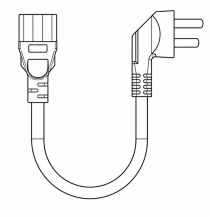 |
电源适配器及AC 线 | 供电 |
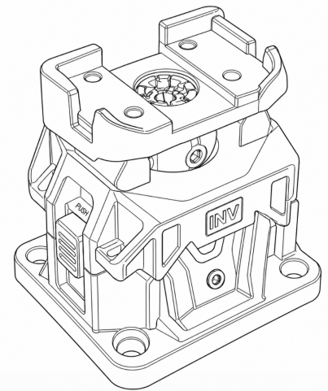 |
抗冲击转接座 | 异常情况剧烈冲击时主动分离 |
 |
直连转接座 | 连接 INV Hand 与用户设备 |
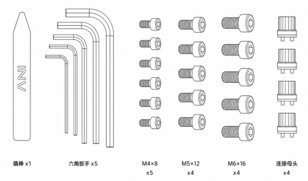 |
配件工具包 | 撬棒×1 六角扳手×5 内六角头M4螺钉×6 内六角头M5螺钉×5 内六角头M6螺钉×5 母头×4 |
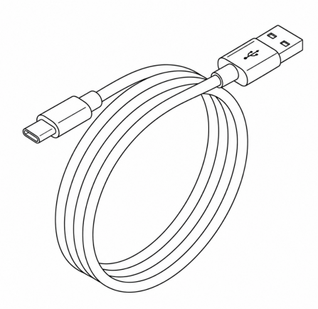 |
USB A to USB C 线 | 用于主机设备与 INV Hand 通信 |
7. 使用注意事项
7.1. 安装紧固要求
必须使用规定尺寸的紧固件，禁止采用不符合规格的螺钉。
建议按对角线顺序逐步拧紧，以保证安装面受力均匀。
在条件允许时，应使用匹配螺钉规格的扭矩工具，将锁紧力矩控制在标准范围内。
7.2. 日常检查与维护
每次完成安装或拆装操作后，应确认安全链、旋转锁扣等机构动作顺畅、无明显磨损，并检查挂点是否出现松动。
若设备在运行中因冲击触发了力释放保护，在重新安装前需检查安装螺钉是否仍保持紧固状态、旋转锁扣的锁定功能是否完好。
📜 授权协议
本仓库代码与文档采用 自定义商业禁止闭源协议 授权。
- ✅ 允许：个人学习、研究、非商业用途的引用与分发
- ❌ 禁止：商业闭源使用、未经授权的修改与再分发
详情见：LICENSE
深圳市英诺维信自动化设备有限公司
🏠 INVrobot 产品文档中心
具身智能灵巧操作终端 —— 产品技术白皮书
本文档为英诺维信机器人具身智能灵巧操作终端全系产品的技术白皮书，涵盖多特异型灵巧手指安装手掌基座、多构型可替换智能手指及配套生态模块。全系产品以具身智能（Embodied AI）理念为设计核心，支持多模态感知融合、端到端智能决策与持续进化学习，面向下一代柔性制造与智能服务场景。
文档版本：V2.0 ｜ 发布日期：2026-05-26 ｜ 编制单位：英诺维信机器人具身智能实验室
一、具身智能灵巧操作终端概览
1.1 系统定位
英诺维信具身智能灵巧操作终端是一套面向下一代柔性制造与智能服务场景的模块化末端执行器智能系统。该系统以具身智能（Embodied AI）范式为设计核心，将多模态感知、智能决策与精密执行深度融合，打破传统末端执行器"刚性-单一-开环"的技术瓶颈，实现面向非结构化环境的自适应、自学习、自进化灵巧操作能力。
系统采用"一手掌基座 + 多构型智能手指"的模块化架构，同一多特异型灵巧手指安装手掌基座可兼容六种不同构型的可替换智能手指，通过秒级热插拔实现任务级重构，使单一机械臂末端具备应对复杂 heterogeneous 任务场景的泛化能力。
1.2 可替换智能手指矩阵（A-F）
全系可替换智能手指覆盖从被动自适应到主动智能驱动、从刚性抓持到柔性协同搬运的全谱系操作需求：
| 代号 | 智能手指名称 | 技术路线 | 开发状态 | 核心能力 |
|---|---|---|---|---|
| A | 无动力夹取手指 | 纯机械欠驱动 + 被动自适应 | 已定型 | 零能耗布料自适应包络抓取，机械自锁保持 |
| B | 有动力夹取手指 | BLDC 主动驱动 + 多模态感知 + 力位混合智能控制 | 已定型 | 三自由度精密抓持、六维力/触觉融合感知、ROS2 智能体接口 |
| C | 平行卷轴式手指 | 滚动接触 + 连续旋转驱动 | 研发中 | 薄板/薄膜类工件的无损伤卷取操作，适用于柔性电路板、光伏硅片等场景 |
| D | 粘附式手指 | 可控粘附界面 + 负压/静电/干粘附混合机制 | 研发中 | 光滑表面物体的无损拾取，面向玻璃面板、抛光金属件等低摩擦工况 |
| E | 双传送带平行手指 | 平行夹持 + 双侧传送带连续输送 | 研发中 | 长条形工件的夹持-输送一体化操作，适用于管材、棒材的连续上料与位移调整 |
| F | 双传送带相对手指 | 对置夹持 + 双侧传送带差速驱动 | 研发中 | 工件夹持状态下的姿态精调与翻转，实现抓取后的六自由度微调，无需释放重抓 |
研发中手指（C-F）：当前处于概念设计与关键技术验证阶段，预计 2026 Q4 完成原型机开发。本文档中已预留接口定义与系统兼容规格，确保定型后可无缝接入现有具身智能灵巧操作终端生态。
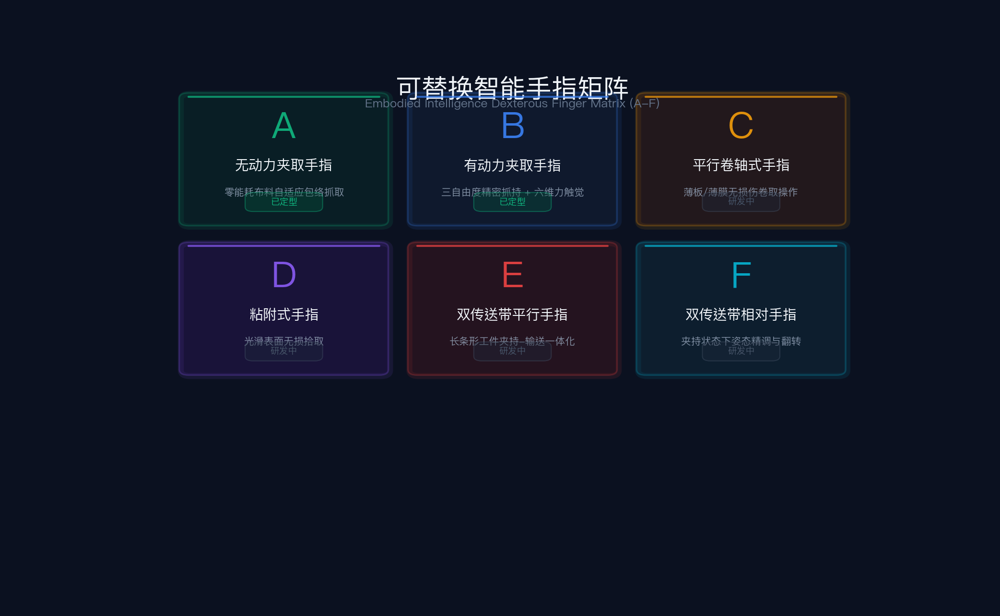
1.3 系统架构与生态关系
┌─────────────────────────────────────────────────────────────┐
│ 具身智能决策层（边缘计算单元 / 云端大脑） │
│ 视觉语言模型(VLM) / 操作策略学习 / 数字孪生仿真 / Sim2Real │
└───────────────────────────┬─────────────────────────────────┘
│ 以太网 / 5G / ROS2 Topic
┌───────────────────────────▼─────────────────────────────────┐
│ 多模态感知融合层（上位机 / 工控机） │
│ 3D 视觉点云 / 触觉阵列时空序列 / 六维力/力矩 / 关节状态 │
│ ↑ 多模态数据对齐 ↑ 感知-动作闭环 │
└───────────────────────────┬─────────────────────────────────┘
│ CAN FD / EtherCAT
┌───────────────────────────▼─────────────────────────────────┐
│ 多特异型灵巧手指安装手掌基座（特异型灵巧手指安装平台） │
│ 5 轴独立旋转驱动 ｜ 构型智能规划 ｜ 统一总线汇聚 │
└────────────┬──────────────────────────────────┬─────────────┘
│ 手掌基座与特异型灵巧手指的连接部分 │
┌────────┴────────┬─────────────┬───────────┴────────┐
↓ ↓ ↓ ↓
手指 A 手指 B 手指 C-F 暂存机构
(无动力) (有动力驱动) (研发中) (手指离线暂存)
生态关系说明：
- 多特异型灵巧手指安装手掌基座（特异型灵巧手指安装平台）是整个灵巧手系统的核心中间层，可直接安装于协作机械臂末端法兰，其上承载 5 根可替换智能手指（通过手掌基座与特异型灵巧手指的连接部分连接），实现完整五指灵巧手功能。
- 无动力夹取手指 A作为专用末端工具，面向纺织/布料场景，可独立部署于机械臂末端。
- **手掌基座与特异型灵巧手指的连接部分（手指快插拔模块）**使有动力手指能够在手掌基座上实现秒级拆装，支持根据不同任务快速更换手指构型。
- **特异型灵巧手指的暂存机构（特异型手指寄存模块）**为离线手指提供安全存放空间，支持产线中手指的缓存与备用管理。
- 全系手指均遵循统一的机械接口、电气接口与通信协议规范，确保跨代际兼容与生态可扩展性。
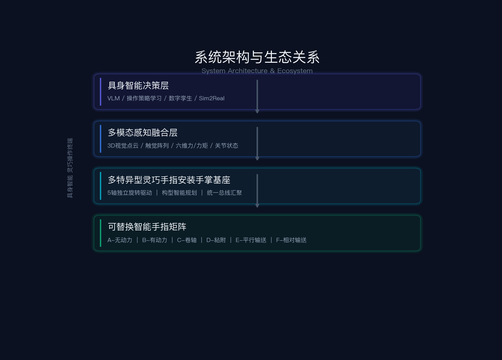
二、多特异型灵巧手指安装手掌基座（特异型灵巧手指安装平台）
2.1 产品概述
多特异型灵巧手指安装手掌基座，即特异型灵巧手指安装平台，是面向协作机械臂末端与灵巧手系统的五指安装承载平台，采用正五边形模块化结构设计，内置 5 个旋转驱动电机，每根手指可实现 0°~360° 连续旋转。适配 ISO 9409-1-31.5/40/50/63 标准机械臂末端法兰盘。是构建完整灵巧手系统的核心承载与旋转定位中间层。
作为具身智能灵巧操作终端的核心承载与构型重构枢纽，该平台赋予多指系统以类人手掌的构型智能——即根据不同操作对象的形状、材质与任务需求，实时计算并调整各手指的朝向角度，形成最优包络构型。
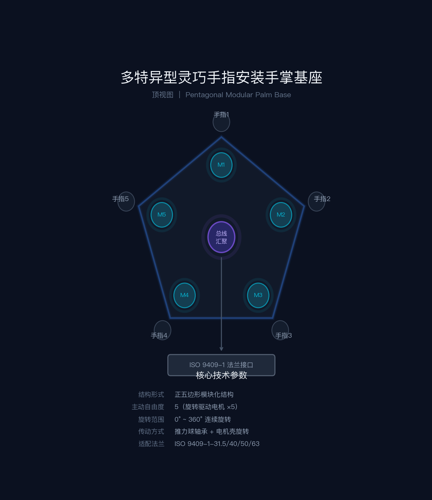
2.2 核心技术参数
| 参数项 | 规格 | 技术释义 |
|---|---|---|
| 结构形式 | 正五边形模块化结构 | 模拟人类手掌骨骼排布，最大化包络空间利用率 |
| 主动自由度 | 5（旋转驱动电机 ×5） | 每组独立 PID + 前馈控制，支持构型级协调规划 |
| 旋转范围 | 0° ~ 360° 连续旋转 | 无限位设计，支持缠绕类操作与多圈姿态调整 |
| 传动方式 | 推力球轴承 + 电机壳旋转 | 高刚性、低摩擦、零背隙，确保旋转定位精度 |
| 适配法兰 | ISO 9409-1-31.5/40/50/63 | 兼容 Universal Robots、ABB、KUKA、Fanuc 等主流协作臂 |
| 通信方式 | 由所选旋转电机决定（推荐 CAN 总线） | 支持多节点实时通信，为具身智能高频感知反馈提供带宽保障 |
| 节点容量 | 最多 16 个节点共线 | 5 旋转轴 + 5 智能手指 + 6 预留扩展，支撑未来多模态传感器接入 |
2.3 结构特征
| 结构部件 | 连接方式 | 技术要点 |
|---|---|---|
| 底盒 | 与机械臂末端法兰对接 | 提供整体承载基础，ISO 规格匹配；内置总线汇聚板 |
| 顶壳 | M3×10 平头螺丝（5 颗）与底盒连接 | 力矩 0.5~0.8 N·m，五边形对角顺序拧紧 |
| 旋转电机 | M2×3 螺丝固定于顶壳（每电机 3 颗） | 力矩 0.15~0.2 N·m，1.5 mm 内六角扳手 |
| 电机壳 | 推力球轴承支撑 | 带动手指根部电机整体旋转；集成手指电气滑环触点，旋转中保持信号连续传输 |
| 手指安装位 | 每指 8 颗 M2×3 螺丝固定于电机壳 | 力矩 0.15~0.2 N·m，对角顺序拧紧 |
2.4 标准工作流程
- 上电初始化：各旋转轴回零或到达预设初始角度
- 构型规划：上位机根据任务需求计算各手指朝向目标角度
- 旋转定位：5 个旋转轴独立或同步运动至目标角度
- 手指抓握：手指执行抓握原语完成物体抓取
- 协同操作：旋转轴与手指协同完成复杂操作任务
2.5 控制架构（直通式）
应用层（上位机）— 构型规划 / 视觉引导 / 手指协调控制
↓ CAN / RS-485（直接控制）
旋转驱动电机层（5 个电机，各自独立）— 位置控制 / 速度控制 / 编码器反馈
↓ 机械传动
执行层（电机壳 + 推力轴承 + 手指根部电机）— 手指旋转定位 / 手指抓取动作
本平台不含独立控制器，所有控制指令由上位机直接下发至各旋转电机。
2.6 通信拓扑
- 5 个旋转电机作为 5 个独立 CAN 节点
- 可与灵巧手手指节点共享同一 CAN 总线，通过节点 ID 区分
- 总线两端各接一个 120Ω 终端电阻
2.7 安装与安全要点
| 项目 | 要求 |
|---|---|
| 法兰盘安装 | 按对角线顺序分两步拧紧：预紧 2 N·m → 最终按法兰规格标准力矩 |
| 供电 | 严格按照所选电机额定电压供电，严禁超压 |
| 旋转碰撞 | 发送旋转指令前确认周边无障碍物，避免旋转过程中手指相互碰撞或与外部结构干涉 |
| 负载限制 | 不得超过单个旋转轴额定径向载荷（以选用电机和轴承规格为准），过载运行将加速轴承磨损 |
| 拆装操作 | 必须先断电，确认各旋转轴静止后再进行操作，避免因意外通电导致夹手伤人 |
| 防水防尘 | 非密封结构，避免在高湿度、多水雾、重粉尘环境中使用。如需防护，可加装防尘盖或防护罩 |
| 紧固件 | 严禁使用非标准规格螺丝替换，以免损坏铝合金螺纹孔。尤其 M2 螺丝力矩不得超过 0.2 N·m |
三、可替换智能手指 A —— 无动力夹取手指
3.1 具身智能定位
无动力夹取手指是具身智能灵巧操作终端的零能耗被动自适应智能体。该手指摒弃传统机电驱动路径，以纯机械具身智能范式实现操作——将环境交互反力本身作为驱动源，通过内部斜楔-连杆机构的智能几何设计，将外部接触力自主转化为自适应夹紧力。这种"以环境为驱动"的设计理念，使该手指在无电源、无气源、无控制器的三无条件下，依然具备对非结构化柔性物料的智能适应能力。
3.2 核心技术参数
| 参数项 | 规格 | 智能特征 |
|---|---|---|
| 驱动方式 | 无动力源，纯机械被动自适应 | 零能耗、零控制、零故障电气风险 |
| 机构类型 | 斜楔-连杆欠驱动机构 | 单输入（下压力）→ 多输出（自适应包络力）的智能力放大 |
| 夹持原理 | 接触反力触发被动闭合，机械自锁保持 | 接触即智能响应，无需传感器-控制器-执行器闭环 |
| 复位方式 | 弹性复位件 | 无外力时自动张开至最大开度 |
| 最大承受压力 | 50 N（超载将导致滚柱断裂） | 结构自保护——超载前滚柱优先断裂，保护基体 |
| 应用场景 | 纺织自动化、布料分拣、柔性物料搬运 | 对轻薄、易变形、低刚度物料具身自适应 |
3.3 结构特征
- 斜楔-连杆机构：工件反作用力驱动夹爪被动闭合，自适应贴合工件轮廓
- 弹性复位件：无外力时自动张开至最大开度
- 机械自锁：闭合后结构自锁，无需持续供能即可保持抓持
- 模块化可拆卸：便于维护与更换磨损件
3.4 标准工作流程
| 步骤 | 操作 | 预计时间 | 判定条件 |
|---|---|---|---|
| 1 | 初始状态复位（弹性复位件张开） | ~300 ms | 到达机械限位，无卡顿 |
| 2 | 物体预定位（机械臂运动） | 视任务而定 | — |
| 3 | 被动自适应抓取（下压触发闭合） | ~150 ms | 完全贴合，结构自锁，无打滑 |
| 4 | 工件搬运与保持 | 视任务周期 | 无外力干扰时保持闭合 |
| 5 | 工件释放（抬起即张开） | ~100 ms | 工件脱离，夹爪回到张开状态 |
3.5 与通用夹爪对比
| 对比维度 | 无动力夹取手指（具身智能） | 传统有源夹爪（传统范式） |
|---|---|---|
| 动力源 | 零能耗（环境反力驱动） | 需气源或电源 |
| 控制复杂度 | 零控制（几何智能自决策） | 需 PLC/控制器 + 传感器闭环 |
| 故障模式 | 仅机械磨损，无电气故障 | 电气、软件、机械多域故障 |
| 环境适应性 | 对柔性物料具身自适应 | 需预设程序适配不同工件 |
| 全生命周期成本 | 极低（无电气件更换） | 高（驱动器、传感器、线缆老化） |
| 智能升级路径 | 结构参数可调（楔角、弹簧刚度） | 依赖软件算法升级 |
3.6 安全与维护要点
| 项目 | 要求 |
|---|---|
| 安装固定 | 连接法兰必须刚性固定，螺栓按规定扭矩锁紧；严禁使用变形/滑牙紧固件 |
| 负载限制 | 最大压力 50 N，超载将导致滚柱断裂 |
| 碰撞防夹 | 运行路径内严禁放置人体部位、线缆或异物；卡滞后必须停机断电排查 |
| 定期检查 | 检查钳口、连杆、弹簧、销轴等关键受力件是否有磨损、变形或裂纹 |
| 维护保养 | 必须在完全停机、断电状态下进行 |
四、可替换智能手指 B —— 有动力夹取手指
4.1 具身智能定位
有动力夹取手指是具身智能灵巧操作终端的旗舰级主动感知智能体。该手指集成 3 自由度精密驱动、六维力/力矩多模态感知与 16×16 高分辨率触觉阵列，构建起指尖级别的具身智能感知-决策-执行闭环。通过力位混合智能控制、阻抗顺应控制与 ROS2 具身智能接口，该手指不仅能执行精密抓持，更能理解接触物理——感知滑移、识别材质、估计形状，并将这些具身经验沉淀为操作策略知识，驱动持续进化。
4.2 核心技术参数
| 参数项 | 规格 | 智能层级 |
|---|---|---|
| 主动自由度 | 3（MCP 近关节、PIP 中关节、DIP 远关节） | 类人手指运动学，支持捏取、包络、侧推等多态操作 |
| 驱动电机 | BLDC 电机 ×3 + FOC 矢量控制 | 低转矩脉动，支持精细力控（分辨率达 0.01 N） |
| 减速机构 | 谐波减速器 | 零背隙、高刚性，确保定位重复精度 |
| 耦合传动 | DIP 与 PIP 固定传动比 1:1.2 ~ 1:1.5（固件可调） | 模拟人类手指自然弯曲形态，支持操作风格个性化配置 |
| 指尖力 | 12 N（额定）/ 峰值更高 | 覆盖从精密装配到中等负载抓持的全谱系 |
| 智能载荷 | 捏取 0.8 kg / 包络 2 kg | 多模态力控下稳定操作的安全载荷 |
| 感知能力 | 六维力/力矩 + 16×16 触觉阵列 | 构建指尖数字触觉孪生，支持滑移预测与材质识别 |
| 供电电压 | 24 V DC（范围 20~30 V） | 支持工业现场电压波动自适应 |
| 控制模式 | 位置控制 / 力位混合控制 / 阻抗控制 | 四层控制架构，支持操作策略级切换 |
| 通信接口 | CAN / CAN FD（推荐）、RS-485、UART（调试） | 原生 ROS2 支持，即插即用接入具身智能生态 |
| 总线节点数 | 最多 16 个节点共线 | 支持多指协同与分布式感知 |
4.3 自由度配置与角度范围
| 关节 | 解剖学命名 | 类型 | 运动方向 | 角度范围 |
|---|---|---|---|---|
| MCP | 掌指关节 | 主动 | 屈伸 | 0° ~ 屈曲最大角 |
| PIP | 近端指间关节 | 主动（与 DIP 耦合） | 屈伸 | 0° ~ 屈曲最大角 |
| DIP | 远端指间关节 | 主动（与 PIP 耦合） | 屈伸 | 0° ~ 屈曲最大角 |
伸展方向为 0°，弯曲方向为正。单指模块不支持主动侧摆，集成于手掌时可通过手掌 MP 关节实现。
4.4 标准工作流程
| 步骤 | 操作 | 预计时间 | 判定条件 |
|---|---|---|---|
| 1 | 上电初始化（自检） | ~500 ms | 绿灯常亮 |
| 2 | 总线连接（CAN） | ~100 ms | 收到心跳帧 |
| 3 | 参数配置（模式/力阈值/耦合比） | ~50 ms | 配置确认应答 |
| 4 | 执行 HOME 原语 | ~300 ms | 三关节回到 0° |
| 5 | 物体接近（机械臂运动） | 视任务而定 | 视觉/激光定位完成 |
| 6 | 执行抓握原语（GRASP_ENVELOPE / PINCH） | 150~500 ms | 力传感器 ≥ 目标力 |
| 7 | 保持抓握（HOLD） | 视任务而定 | 无滑移报警 |
| 8 | 运输/操作 | 视任务而定 | 加速度/振动在允许范围内 |
| 9 | 释放（RELEASE） | 200~400 ms | 指尖力归零 |
| 10 | 返回 HOME 或进入待机 | — | 准备下一次任务 |
4.5 控制架构（四级分层）
应用层（上位机）— 任务规划 / 视觉引导 / 力控算法 / 学习算法
↓ ROS2 Topic / CAN Protocol
运动规划层（PC端，可选）— 轨迹生成 / 逆运动学 / 碰撞检测 / 多指协调
↓ CAN / CAN FD
关节控制层（手指内置 MCU，480 MHz）— PID+前馈 / 力位混合 / 阻抗控制 / 安全监控
↓ PWM + FOC
驱动层（BLDC×3 / 谐波减速器 / 编码器 / 传感器）
4.6 力位混合控制逻辑
有动力夹取手指的默认工作模式为力位混合具身智能控制，其决策逻辑模拟人类手指的"自由接近-柔顺接触-稳定保持"直觉：
- 位置控制阶段：指尖力 < 力切换阈值（默认 0.5 N）时，手指按位置控制模式运动，跟踪目标关节角度
- 切换条件：当指尖力 ≥ 力切换阈值时，自动切换到力控制模式
- 力控制阶段：手指根据目标力与当前力的偏差调整关节输出力矩，维持稳定的接触力
- 切换回位置控制：当接触力降至阈值以下且持续 100 ms 时，自动回到位置控制
可调参数：
force_threshold：0.1 ~ 10 N（默认 0.5 N）target_force：0 ~ 12 Nkp_position：0 ~ 1000kp_force：0 ~ 100
4.7 通信接口（8pin 连接器）
- 推荐协议：CAN / CAN FD（1 Mbps）
- 节点 ID：可配置，多指组网时通过 ID 区分
- 拓扑：菊花链，总线两端各接 120Ω 终端电阻
- RS-485 与 CAN 共用差分线对，需通过跳线选择，不可同时使用
4.8 SDK/API 支持
| 接口类型 | 支持平台 | 编程语言 | 主要功能 |
|---|---|---|---|
| Python SDK | Ubuntu 22.04/24.04 | Python 3.10+ | 初始化、模式设置、原语调用、传感器读取 |
| C++ SDK | Ubuntu 22.04/24.04 | C++17 | 低延迟实时控制 |
| ROS2 驱动 | Ubuntu 22.04/24.04 | Python/C++ | Topic 订阅发布、Service 调用 |
Python 快速示例：
from specialized_finger import FingerController
# 初始化（通过CAN接口）
finger = FingerController(interface='can0', node_id=1)
finger.connect()
# 执行HOME
finger.home()
# 设置力位混合模式，执行包络抓握
finger.set_mode(FingerController.MODE_FORCE_POSITION)
finger.set_force_threshold(1.0) # 1N切换阈值
finger.set_target_force(3.0) # 3N保持力
result = finger.grasp_envelope(max_angle=90) # 最大弯曲90°
# 获取传感器数据
force = finger.get_force_torque() # [Fx, Fy, Fz, Mx, My, Mz]
tactile = finger.get_tactile() # 16×16 numpy数组
joints = finger.get_joint_states() # [MCP, PIP, DIP] 角度
# 释放
finger.release()
# 断开连接
finger.disconnect()
4.9 安全与维护要点
| 项目 | 要求 |
|---|---|
| 供电 | 24 V DC，严禁交流或 >30 V DC |
| 过温保护 | >60°C 自动切断电机输出，冷却至 <40°C 后恢复 |
| 碰撞处理 | 立即切断力矩 → 排除原因 → HOME → 绿灯常亮 → 继续 |
| 固件升级 | 严禁断电或拔插线缆，需在稳定供电环境下执行 |
| 安装力矩 | M6×16 螺钉：预紧 2 N·m → 最终 6 N·m |
| 终端电阻 | 总线末端节点需启用 120Ω 终端电阻 |
| 快拆基座 | 对准定位销推入，顺时针旋转至"咔嗒"声锁定；拆卸时按压卡扣逆时针旋转 |
五、手掌基座与特异型灵巧手指的连接部分（手指快插拔模块）
5.1 模块定位
手掌基座与特异型灵巧手指的连接部分，即手指快插拔模块，是连接有动力夹取手指与多特异型灵巧手指安装手掌基座（或机械臂末端）的机械接口模块，实现有动力手指的秒级快速拆装。该模块使同一手掌基座能够根据不同任务需求快速更换不同构型的手指，大幅提升产线柔性。
5.2 结构特征
| 特征 | 说明 |
|---|---|
| 锁定机构 | 旋转卡扣式锁定，推入后顺时针旋转至"咔嗒"声确认 |
| 定位方式 | 定位销 + 防呆槽，确保电气与机械同轴对接 |
| 拆卸方式 | 按压卡扣按钮，逆时针旋转释放 |
| 电气接口 | 8pin 连接器与机械锁紧一体化，插接同时完成电气连通 |
| 承载能力 | 满足有动力手指额定负载（指尖力 12 N / 包络载荷 2 kg） |
| 智能识别 | 触点编码识别 finger ID，基座自动识别当前接入手指型号（A/B/C/D/E/F），加载对应驱动与策略 |
5.3 安装要点
- 安装：将手指快拆基座对准安装面定位销 → 推入到位 → 顺时针旋转锁定卡扣至"咔嗒"声确认锁定
- 拆卸：按压卡扣按钮 → 逆时针旋转 → 释放取出
- 检查：首次安装后确认无松动间隙，8pin 插头防呆槽对齐，插接到位听到锁定声
六、特异型灵巧手指的暂存机构（特异型手指寄存模块）
6.1 模块定位
特异型灵巧手指的暂存机构，即特异型手指寄存模块，是为灵巧手系统配套的离线手指存放与管理模块。当多特异型灵巧手指安装手掌基座需要更换手指构型（如从三指抓取切换为两指捏取）或手指需要离线维护/校准时，暂存机构提供安全、有序的存放空间，避免手指散乱放置造成的损伤或遗失。
6.2 功能特征
| 特征 | 说明 |
|---|---|
| 存放容量 | 【根据设计确定，如：可同时存放 3~5 根有动力手指】 |
| 定位固定 | 每根手指有独立的存放位，带有与快插拔模块匹配的定位结构 |
| 电气保护 | 存放位不带电，避免离线手指的电气短路或误触发 |
| 防护设计 | 防尘/防碰撞外壳，保护离线手指的精密结构 |
| 模块化 | 可独立部署于工作台或集成于产线设备旁 |
| 智能台账 | 支持 RFID / 二维码身份识别（预留），每根手指的服役历史、维护记录、性能退化曲线可追溯 |
6.3 使用方式
- 从安装平台拆卸手指（按压快插拔卡扣 → 逆时针旋转 → 取出）
- 将手指对准暂存机构存放位的定位销
- 推入至限位，确认手指稳固无晃动
- 需要使用时取出，安装至安装平台即可
七、全系可替换智能手指横向对比
| 对比维度 | A 无动力夹取手指 | B 有动力夹取手指 | C 平行卷轴式手指 | D 粘附式手指 | E 双传送带平行手指 | F 双传送带相对手指 |
|---|---|---|---|---|---|---|
| 开发状态 | 已定型 | 已定型 | 研发中 | 研发中 | 研发中 | 研发中 |
| 具身范式 | 被动机械具身智能 | 主动感知-决策-执行闭环 | 滚动接触具身智能 | 界面粘附具身智能 | 夹持-输送协同智能 | 夹持-姿态协同智能 |
| 驱动方式 | 零能耗（环境反力） | BLDC×3 + FOC（24V） | 伺服电机 + 卷轴传动 | 负压/静电/干粘附混合驱动 | 双侧伺服 + 传送带 | 双侧伺服 + 差速传送带 |
| 自由度 | 欠驱动（被动自适应） | 3（屈伸×3） | 1~2（卷轴旋转 + 开合） | 1（粘附面贴合） | 2（开合 + 带传动） | 3（开合 + 双侧差速） |
| 感知能力 | 无（纯机械自适应） | 六维力/力矩 + 16×16 触觉 | 卷轴编码器 + 张力传感（规划） | 真空度/静电压监测（规划） | 带速编码器 + 夹持力传感（规划） | 带速编码器 + 夹持力传感（规划） |
| 核心操作 | 下压-包络-自锁-释放 | 接近-感知-力控抓握-释放 | 卷取-保持-释放 | 贴附-粘取-转移-释放 | 夹持-输送-位移-释放 | 夹持-差速旋转-姿态调整 |
| 典型工件 | 布料、薄膜、柔性袋 | 异形零件、精密器件 | 薄板、柔性电路板、光伏硅片 | 玻璃面板、抛光金属、光滑塑料 | 管材、棒材、长条形工件 | 需翻转调姿的工件 |
| 控制接口 | 无（纯机械） | CAN FD / ROS2 / SDK | CAN FD / ROS2（预留） | CAN FD / ROS2（预留） | CAN FD / ROS2（预留） | CAN FD / ROS2（预留） |
| 能耗等级 | 零 | 中（24V 有源驱动） | 中（卷轴伺服） | 低-中（粘附泵/高压） | 中（双侧伺服） | 中（双侧差速伺服） |
| 维护模式 | 磨损件热插拔更换 | 预测性维护 + OTA | 预测性维护（规划） | 粘附面定期更换（规划） | 传送带张紧调整（规划） | 传送带张紧调整（规划） |
八、系统集成方案
8.1 完整五指灵巧手系统
协作机械臂末端（ISO 9409-1 法兰）
↓
多特异型灵巧手指安装手掌基座（底盒固定，5 旋转轴）
↓（通过手掌基座与特异型灵巧手指的连接部分连接）
5 × 可替换智能手指（安装于电机壳）
↓
CAN 总线统一连接（最多 16 节点：5 旋转轴 + 5 手指 = 10 节点）
↓
上位机（PC/工控机，ROS2 / 自定义控制软件）
当需要更换手指构型时，通过连接部分秒级拆卸/安装手指；离线手指存放于特异型灵巧手指的暂存机构。
8.2 布料抓取专用系统
协作机械臂末端
↓
无动力夹取手指 A（法兰连接）
↓
无需电气连接，纯机械操作
↓
上位机仅控制机械臂运动轨迹
8.3 混合配置方案
在需要同时处理刚性物体和柔性布料的产线中，可采用快换装置实现有动力手指/无动力夹爪的快速切换：
- 刚性/精密任务 → 有动力夹取手指 B（通过连接部分安装在手掌基座上）
- 布料/柔性物料任务 → 无动力夹取手指 A（独立安装在快换装置上）
- 离线手指管理 → 特异型灵巧手指的暂存机构
九、关键紧固件与安装力矩汇总
| 产品/模块 | 连接部位 | 紧固件规格 | 拧紧力矩 |
|---|---|---|---|
| 手掌基座 | 底盒 → 机械臂末端法兰 | 按 ISO 法兰标准螺钉 | 预紧 2 N·m → 最终按标准力矩 |
| 手掌基座 | 顶壳 → 底盒 | M3×10 平头内六角螺丝（5 颗） | 0.5 ~ 0.8 N·m |
| 手掌基座 | 旋转电机 → 顶壳 | M2×3 螺丝（每电机 3 颗） | 0.15 ~ 0.2 N·m |
| 手掌基座 | 手指根部电机 → 电机壳 | M2×3 螺丝（每指 8 颗） | 0.15 ~ 0.2 N·m |
| 有动力手指 B | 安装法兰 → 机械臂/手掌 | M6×16 内六角圆柱头螺钉（8.8 级以上） | 预紧 2 N·m → 最终 6 N·m |
| 无动力夹爪 A | 连接法兰 → 执行机构 | 按标准规格螺栓 | 按规定扭矩 |
十、文档版本信息
| 项目 | 内容 |
|---|---|
| 文档名称 | 具身智能灵巧操作终端 —— 产品技术白皮书 |
| 版本号 | V2.0 |
| 发布日期 | 2026-05-26 |
| 编制依据 | 特异型灵巧手指安装平台产品文档、无动力夹取手指产品文档、有动力夹取手指及手指快插拔模块及特异型手指寄存模块产品文档 |
| 生态兼容 | 全系手指 A-F 统一接口规范；C-F 研发中规格已预留，确保定型后无缝接入 |
| 版权信息 | 版权所有 © 英诺维信机器人 |
未经书面许可，不得以任何形式复制或传播本文档的全部或部分内容。产品规格如有变更，恕不另行通知。具身智能，感知世界，灵巧未来。
INVrobot 具身智能机械臂
English | 中文
面向动力学算法、力位控制、数字孪生可视化和 LeRobot 数据采集的具身 6 轴机械臂实验平台。
INVrobot 具身智能机械臂是一个低成本、开放式的机械臂实验平台，面向传统控制理论、机器人动力学算法和具身智能数据流程。项目包含 6 轴机械臂本体、CAN 总线底层通讯、C# WinForms 上位机、Unity 数字孪生、内置运动学/动力学算法库，并计划提供接入 LeRobot 的数据采集、模型训练和模型部署流程。


目录
项目简介
传统动力学控制实验通常依赖昂贵的工业机械臂、封闭的底层控制器，或只停留在仿真环境。INVrobot 具身智能机械臂希望提供一个更安全、更低成本、更容易二次开发的平台，用于：
- 验证 PID、动力学前馈 + PID、阻抗控制、基于计算力矩法的滑模控制等传统控制算法；
- 开发和测试正逆运动学、速度/加速度正逆解、雅可比矩阵、动力学方程、摩擦补偿等模型算法；
- 通过灵活末端执行器采集操作数据，并接入 LeRobot 进行模型训练和部署；
- 在上位机中通过 Unity 数字孪生实时查看机械臂姿态和关节状态。
当前资料中包含两类原型方向：
| 模式 | 主要用途 | 控制模型 | 说明 |
|---|---|---|---|
| 动力学算法平台 | 传统控制理论与模型控制算法验证 | 电机力矩控制 | C# 控制框架，底层控制频率约 500 Hz |
| LeRobot 数据平台 | 末端操作、数据采集、模型训练与部署 | 电机位置控制 | 末端更灵活，适合采集具身智能任务数据 |
| 三合一夹爪 | 抓取与交互任务 | 力位混合控制 | 支持功能切换，并可控制夹爪输出力度 |
核心特性
| 特性 | 说明 |
|---|---|
| 具身 6 轴机械臂 | 参考工业 6 轴机械臂构型，面向实验室和教学科研场景 |
| CAN 总线通讯 | 上位机通过 USB 转 CAN 模块与机械臂通讯 |
| 实时控制架构 | 依托计算机算力和高精度定时器，目标控制频率 500 Hz 至 1 kHz |
| 内置算法库 | 正逆运动学、速度/加速度映射、雅可比矩阵、动力学方程、摩擦补偿 |
| 控制算法 | PID、动力学前馈 + PID、阻抗控制、基于计算力矩法的滑模控制 |
| WinForms 上位机 | 串口/CAN 连接、使能/失能、零点设置、算法选择、参数调节、安全限位 |
| 数字孪生 | Unity 仿真程序嵌入上位机，实时显示机械臂位姿 |
| 数据可视化 | 位置、速度、加速度、力矩反馈和轨迹图表 |
| LeRobot 接入 | 打通数据采集、模型训练、模型部署的完整流程 |
| 低成本开放设计 | 具身结构和底层控制接口，降低动力学算法实验门槛 |


系统架构
flowchart LR
User["用户"] --> UI["WinForms 上位机<br/>UI 控制与数据分析"]
UI --> Timer["高精度定时器<br/>毫秒级调度"]
Timer --> Algo["动力学控制算法<br/>PID / 前馈 / 阻抗 / 滑模"]
Algo --> Model["运动学与动力学模型<br/>正逆解 / 雅可比 / 摩擦补偿"]
Algo --> CAN["USB 转 CAN 模块"]
CAN --> Arm["具身 6 轴机械臂"]
Arm --> Sensor["关节角度 / 速度 / 力矩反馈"]
Sensor --> CAN
CAN --> UI
UI --> Twin["Unity 数字孪生"]
平台将模型计算和控制调度放在上位机侧完成，充分利用计算机多核 CPU 的算力。相比仅基于单片机的方案，该架构更适合运行动态雅可比更新、模型补偿、滑模控制等复杂算法，同时保持具身机械结构的安全性和可维护性。
硬件组成
| 项目 | 说明 |
|---|---|
| 机械臂本体 | 具身 6 轴机械臂，参考工业六轴机械臂构型 |
| 臂展与负载 | 当前原型资料：臂展约 600 mm，负载约 2 kg |
| 通讯方式 | USB 转 CAN 模块 |
| 执行器 | 支持力矩控制和位置控制两类原型方向的关节电机 |
| 结构材料 | 关键受力部件使用铝合金，外壳和定制辅助件可使用 3D 打印 |
| 末端执行器 | 三合一夹爪，支持力位混合控制 |
| 机械资料 | 机械三维资料位于 mechanical/ 目录 |
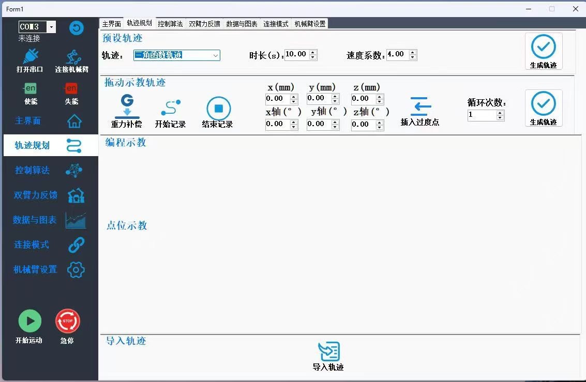

上位机软件
上位机基于 C# WinForms 开发，集成通讯连接、模型计算、轨迹规划、控制算法选择、参数调节、反馈可视化和 Unity 数字孪生。
主要模块包括：
- 机械臂连接、通讯建立、使能和失能；
- 零点设置与关节状态初始化；
- 预设轨迹生成、拖动示教、导入轨迹运行；
- 运动学和动力学解析算法库；
- PID、动力学前馈、阻抗控制、滑模控制等算法切换；
- 摩擦模型辨识与摩擦补偿；
- 位置、速度、加速度、力矩等实时图表；
- Unity 数字孪生位姿显示。
当前上位机依赖包放置在 上位机安装包/ 目录。
LeRobot 流程
INVrobot 具身智能机械臂计划同时作为动力学算法平台和 LeRobot 兼容的具身智能实验平台。
flowchart LR
Collect["采集示教数据<br/>机械臂 + 夹爪 + 相机"] --> Dataset["转换为 LeRobot 数据集"]
Dataset --> Train["训练策略模型<br/>ACT / Diffusion / 其他策略"]
Train --> Eval["任务评估"]
Eval --> Deploy["部署到 DM-ABB 机械臂"]
Deploy --> Collect
计划开源的 LeRobot 相关模块：
- 机械臂读写接口适配器；
- 数据采集脚本；
- 标定和设备配置示例；
- 数据集转换工具；
- 训练和部署示例；
- 末端操作任务示例。
仓库结构
.
├── mechanical/ # 机械三维资料压缩包
├── pictures/ # README 展示图与上位机截图
├── 上位机安装包/ # 上位机依赖包
├── 机械臂介绍(6).pdf # 原型说明资料
├── README.md
└── README_CN.md
完整开源后建议整理为：
.
├── docs/ # 装配、接线、标定和安全文档
├── mechanical/ # STEP / STL / 源 CAD 文件
├── hardware/ # BOM、接线图、CAN 设备说明
├── software/
│ ├── host_app/ # C# WinForms 上位机源码
│ ├── unity_twin/ # Unity 数字孪生项目
│ └── firmware_or_driver/ # CAN 驱动与底层设备适配
├── lerobot_dm_abb/ # LeRobot 适配器与示例
├── examples/ # 控制算法和操作任务示例
└── pictures/
快速开始
仓库仍处于完整公开前的整理阶段。预期使用流程如下：
- 根据机械文件和 BOM 准备硬件。
- 安装 USB 转 CAN 适配器驱动。
- 安装上位机软件依赖。
- 通过 CAN 连接机械臂并打开上位机。
- 设置机械臂零点并使能关节。
- 选择控制算法并调节参数。
- 运行轨迹规划、数据可视化或 LeRobot 数据采集。
安全注意事项：
- 使能电机前确认急停可用。
- 第一次测试时使用低速度、低力矩、空载运行。
- 运行轨迹前确认关节限位和零点正确。
- 新控制算法建议先在仿真或空载状态下验证。
开发计划
- 公开完整 STEP/STL 机械文件。
- 添加 BOM、装配指南和接线指南。
- 开源 C# WinForms 上位机源码。
- 公开 Unity 数字孪生项目。
- 补充 CAN 通讯协议文档。
- 添加动力学算法与摩擦补偿示例。
- 开源 LeRobot 机械臂适配器。
- 添加数据采集、训练和部署教程。
- 添加示例数据集和基准任务。
- 完善中英文文档。
贡献
完整公开后欢迎参与贡献，方向包括：
- 机械结构改进；
- 上位机和 UI 优化；
- 新控制算法；
- LeRobot 接入和数据集工具；
- 操作任务示例和 benchmark；
- 文档、教程和安全检查。
致谢
本项目受到开源机器人和机器人学习项目的启发，特别感谢：
- LeRobot，降低了真实机器人学习的使用门槛；
- LeRobot-Anything-U-Arm，提供了清晰的开源项目组织方式和 LeRobot 工作流参考；
- 开源机器人社区。
许可证
开源许可证尚未最终确定。正式公开前建议补充 LICENSE 文件。
项目简介
本项目面向柔性布料操作（如抓取、平移、折叠等）的机器人学习任务，提供了一套完整的算法模型训练与部署流程。核心包括：
- 数据采集：支持遥操作（Teleop）、纯策略推理（Policy）和混合模式（Mixed + DAgger），可同时采集专家数据、推理数据和人工干预数据，输出符合 LeRobot 格式的数据集。
- 策略模型微调：基于 π0.5 视觉‑语言‑动作（VLA）模型进行微调，支持带/不带 Advantage 条件的训练，适配双臂 14 维动作空间。
- 价值模型与 Advantage 标注：在 π0.5 骨架上附加价值头，分两阶段（Progress Loss + TD Learning）训练，为数据集中的每个动作块计算 action_advantage，用于后续优势条件化策略训练。
- 世界模型训练：基于 LTX‑Video 的扩散式世界模型，学习在给定动作条件下预测未来多视角视频帧，为在线强化学习提供想象环境。
- 在线策略自提升：参考 RISE 框架，利用世界模型（WM）和奖励模型（RM）生成想象 rollout，通过优势信号（GAE）对策略进行在线 RL 微调，实现无需真实试错的策略自我提升。
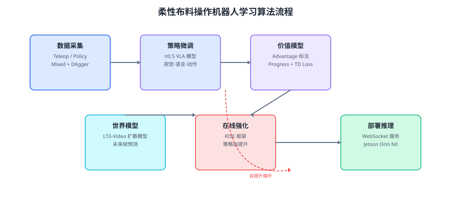
| 阶段 | 所需资源 |
| 数据采集 | 机械臂 |
| π0.5 V0模型训练 | GPU服务器 |
| Policy WebSocket 远程服务 | Jetson Orin NX Super客户端 |
| DAgger人工干预数据采集 | 机械臂、GPU服务器 |
| 价值模型训练 | GPU服务器 |
| Advantage策略模型训练 | GPU服务器 |
| 世界动力学模型训练 | GPU服务器 |
| 基于世界模型的在线强化 | GPU服务器 |
本仓库所使用的框架基于Lerobot框架，使用的机械臂为非官方提供；
如需更换其它机械臂，需自己手动集成到本仓库提供的框架。
在自己的数据上使用模型
### 最低硬件配置要求
要运行本仓库中的模型，需要至少符合以下规格的NVIDIA显卡。
| 模式 | 所需显存（近似值） | 示例GPU型号 |
| 推理 (Inference) | > 8 GB | RTX 4090 (48G) |
| 全参数微调 (Fine-Tuning, Full) | > 70 GB | RTX 4090 (48G) × 2 |
注意：本仓库暂未进行 LoRA 微调，如有需要，需自行测试。
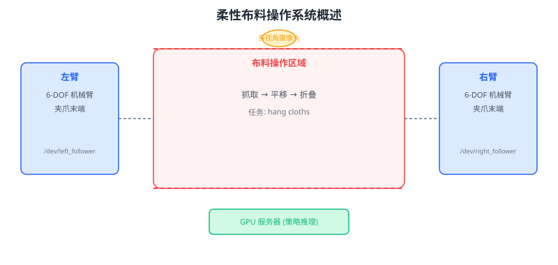
效果展示
双臂柔性上筒子布（我方方案）

桶装布料上料（对比方案）

0、环境安装
# 仓库克隆
git
# 一键安装所有子模块
cd INV
bash install.sh
1. 数据采集 (robodeploy/)
使用 robodeploy 包进行遥操作录制和策略推理数据采集。
cd robodeploy
# 推荐方式：Shell 脚本启动（交互式菜单选择控制模式）
bash scripts/record_hybrid.sh
Shell 脚本快速配置区 (scripts/record_hybrid.sh 顶部)：
（这里我们使用的示例双臂机器人名称为**bi_s1，**实际使用过程中需要配置自己的双臂机器人）
| 变量 | 说明 | bi_s1 示例值 |
ROBOT_TYPE |
机器人类型 | bi_s1_follower |
TELEOP_TYPE |
遥操作主端类型 | bi_s1_leader |
LEFT_FOLLOWER_PORT |
左臂从端串口 | /dev/left_follower |
RIGHT_FOLLOWER_PORT |
右臂从端串口 | /dev/right_follower |
LEFT_LEADER_PORT |
左臂主端串口 | /dev/left_leader |
RIGHT_LEADER_PORT |
右臂主端串口 | /dev/right_leader |
POLICY_TYPE |
策略客户端类型 | openpi |
OPENPI_HOST / OPENPI_PORT |
策略服务地址 | localhost / 8000 |
CAMERA_CONFIG |
摄像头 JSON 配置 | 见脚本内示例 |
OUTPUT_DIR |
数据输出目录 | ./s1_data |
REPO_ID |
数据集标识 | lerobot/bi_s1_0522_2 |
TASK |
任务描述 | hang cloths |
FPS |
采集帧率 | 30 |
EPISODE_TIME_S |
单 episode 最大时长 | 6000 |
CONTROL_MODE |
运行时交互选择 | teleop / policy / mixed |
USE_TEMPORAL_SMOOTHING |
策略推理时序平滑 | true |
INFERENCE_RATE |
推理频率 (Hz) | 2.6 |
LATENCY_K |
丢弃旧块步数 | 12 |
MIN_SMOOTH_STEPS |
重叠区最小长度 | 8 |
三种控制模式：
| 模式 | 说明 | 需要 Policy 服务 |
teleop |
纯遥操作录制（专家数据） | 否 |
policy |
纯策略推理（推理数据） | 是 |
mixed |
混合模式（P 键实时切换，进行人工干预） | 是 |
键盘操作：
| 按键 | 功能 |
R |
开始/停止录像 |
S |
保存 episode + 成功/失败标注 (1=失败, 0=成功, 2=丢弃) |
P / Tab |
切换 Teleop ↔ Policy（仅 mixed 模式） |
Z |
机械臂归零复位 |
Esc |
退出 |
输出目录结构 (LeRobot 格式)：
output_dir/
├── meta/
│ ├── info.json # 数据集元信息
│ ├── episodes.jsonl # episode 摘要
│ └── tasks.jsonl # 任务索引
├── data/
│ └── chunk-000/
│ └── episode_000000.parquet
└── videos/
└── chunk-000/
├── front/
├── left_wrist/
└── right_wrist/
合并多个数据集：
python scripts/merge_lerobot_datasets.py --input-dirs <dir1> <dir2> --output-dir <merged_dir>
2. Policy 训练统计值计算 (policy_and_value/policy_offline_and_value/)
在训练前需要计算数据集的归一化统计量 (mean/std)。
cd policy_and_value/policy_offline_and_value
# 使用 Compute_norm 配置计算统计量（不需要 GPU）
python scripts/compute_norm_stats_fast.py --config-name Compute_norm
注意：运行前需确认
config.py中Compute_norm配置的repo_id指向正确的数据集路径。 bi_s1 默认数据集路径：/home/kemove/RISE/deploy/data_collection/s1_data/lerobot/bi_s1_full_merged统计量输出到：data/norms/bi_s1_full_merged/
3. 离线 Policy 训练（π0.5）
cd policy_and_value/policy_offline_and_value
# 训练（PyTorch DDP）
bash train.sh <CONFIG> <GPU数> [EXP_NAME]
# bi_s1 示例：不带 advantage 条件的 π0.5 策略
bash train.sh BiS1_Pi05_style_training 8
bi_s1 相关 Config：
| Config 名称 | 用途 | 数据集 | 训练步数 |
Compute_norm |
计算归一化统计量 | bi_s1_full_merged |
- |
BiS1_Pi05_style_training |
π0.5 策略 (无 advantage) | s1_bimanual_0422_mixed |
100k |
BiS1_Policy_offline_release |
π0.5 策略 (带 advantage 条件) | bi_s1_full_mixed_w_adv |
30k |
关键训练参数 (在 config.py 中配置)：
| 参数 | 默认值 | 说明 |
batch_size |
32 | 每 GPU batch size |
num_train_steps |
30000 | 总训练步数 |
save_interval |
1000 | 检查点保存间隔 |
num_workers |
8 | 数据加载线程数 |
action_dim |
14 | 动作维度 (双臂 7×2) |
4. Policy WebSocket 服务
我们提供策略推理服务端和部署端分离，使用 WebSocket 实现。
训练完成后启动策略推理服务，供数据采集端和部署端连接。
cd policy_and_value/policy_offline_and_value
# 启动 WebSocket 策略服务
python scripts/serve_policy.py --port 8000 policy:checkpoint \
--policy.config BiS1_Policy_offline_release \
--policy.dir checkpoints/BiS1_Policy_offline_release/mix_failure/18000
# 带动作日志记录（JSONL 格式）
python scripts/serve_policy.py --port 8000 --log_file actions.jsonl policy:checkpoint \
--policy.config BiS1_Policy_offline_release \
--policy.dir checkpoints/BiS1_Policy_offline_release/mix_failure/18000
serve_policy.py 参数：
| 参数 | 说明 |
--port |
服务端口 (默认 8000) |
--default_prompt |
当数据中无 prompt 时的默认任务描述 |
--record |
录制策略行为用于调试 |
--log_file |
将每次推理的动作/状态写入 JSONL 文件 |
policy:checkpoint --policy.config |
训练配置名 |
policy:checkpoint --policy.dir |
检查点目录 |
开启上述服务端的策略推理服务之后，开启数据采集端和部署端的连接。注意控制模式模式需要为 policy 或者 mixed
cd robodeploy
# 推荐方式：Shell 脚本启动（交互式菜单选择控制模式）
bash scripts/record_hybrid.sh
注意：选择
mixed模式，可以进入混合模式（P 键实时切换，进行人工干预），人工干预保存的数据可加入数据集进行数据集增强
5. 价值模型训练
价值模型在 Policy backbone 上附加 Value Head (3层 MLP)，分两阶段训练。
cd policy_and_value/policy_offline_and_value
# 方式一：手动分步训练
# Stage 1: 仅 Progress Loss（预训练 value head）
bash train.sh BiS1_value_release_stage1 8
# Stage 2: Progress Loss + TD Learning（微调，从 stage1 的 4000 步 checkpoint 恢复）
bash train.sh BiS1_value_release 8
# 方式二：自动链式训练（stage1 → stage2 自动衔接）
bash scripts/train_bis1_value_chain.sh 8
bi_s1 价值模型 Config：
| Config 名称 | 阶段 | 特点 | 训练步数 |
BiS1_value_release_stage1 |
Stage 1 | Progress Loss only, TD disabled | 4k |
BiS1_value_release |
Stage 2 | Progress + TD Loss (γ=0.995, τ=0.01) | 20k |
关键参数：
| 参数 | 值 | 说明 |
value_gamma |
0.995 | TD 折扣因子 |
value_TD_TAU |
0.01 | 目标网络软更新系数 |
value_failure_reward |
-1.0 | 失败 episode 的终端奖励 |
value_terminal_window |
10 | 终端奖励窗口大小 |
loss_value_use_bce |
False | 使用 MSE loss |
p_with_progress_loss |
1.0 | Progress loss 概率 |
6. Advantage 标注与模型训练
用训练好的价值模型对数据集逐帧推理 frame_value，计算 action_advantage。
cd policy_and_value/policy_offline_and_value
# 一键标注（三步自动完成：推理 frame_value → 写入 parquet → 计算 advantage）
bash label_value.sh BiS1_value_release checkpoints/BiS1_value_release/BiS1_value_release/18000
# 输出：数据集目录_w_adv/ （parquet 新增 frame_value, frame_value_smooth, action_advantage 列）
三步流水线 (examples/label_frame_value.py)：
| 步骤 | 说明 |
| 1. 模型推理 | 逐 batch 推理每帧 frame_value，写入临时 .npy |
| 2. 写入列 | add_column_from_disk() 将 frame_value 追加到 parquet |
| 3. 计算 advantage | smooth_value_and_compute_advantage() 计算 frame_value_smooth 和 action_advantage |
advantage 计算公式 (MODE=v1)：
action_advantage[t] = avg(V[t+1], ..., V[t+CHUNK_SIZE]) - V[t]
然后 × ADVANTAGE_SCALER
专家/推理数据混合处理（数据集含 is_infer_data 字段时自动区分）：
- 专家数据 (
is_infer_data=0)：action_advantage = 1.0（恒定，完全模仿专家） - 推理数据 (
is_infer_data=1)：从 frame_value 计算 advantage
关键参数 (对齐 RL 配置 rl_release_bi_s1_wm_rm.yaml)：
| 参数 | 脚本变量 | 默认值 | RL 配置对应 |
| 前瞻步数 | CHUNK_SIZE |
50 | num_action_chunks: 50 |
| 放大因子 | ADVANTAGE_SCALER |
5.0 | advantage_scale: 5 |
| 平滑窗口 | N_SMOOTH |
3 (当前关闭) | - |
纯专家数据快速标注（不经过价值模型）：
# 直接给所有帧赋 action_advantage = 1.0
python examples/aloha_real/add_reward_quality_label.py
# 修改脚本中的 data_roots 为数据集路径，输出 _w_adv_expert/
可视化已标注数据（离线，不跑模型）：
python examples/visualize_frame_value_and_advantage.py \
--dataset_root <数据集>_w_adv \
--chunk chunk-000 \
--output_dir ./visual_labeled
# 输出: visual_labeled/<数据集名>/episode_000000_vis.mp4
可视化价值模型预测（在线，加载模型推理）：
python examples/visualize_value_only.py \
--config_name BiS1_value_release \
--ckpt_dir path/to/checkpoint \
--output_dir ./value_vis \
--max_vis_episodes 5 \
--split all \
--headview_only
标注脚本可选参数：
| 参数 | 默认值 | 作用 |
--split |
all |
数据集分片 (all / val_tasks / heldout_tasks) |
--batch_size |
64 |
推理 batch size |
--with_vis / --no-with_vis |
默认开 | 推理时是否同步生成可视化 |
--max_vis_episodes |
3 |
最多可视化 episode 数 |
--headview_only |
False | 只显示 front 视角 |
--metric_only |
False | 只统计数值，跳过所有视频渲染 |
标注完成后，训练****带 advantage 条件的 π0.5 策略
cd policy_and_value/policy_offline_and_value
# bi_s1 示例：不带 advantage 条件的 π0.5 策略
bash train.sh BiS1_Policy_offline_release 8
7. 世界模型训练 (dynamics/dynamics_model/)
基于 LTX-Video 的扩散世界模型，用于预测动作条件下的未来视频帧。
7.1 下载预训练权重
cd dynamics/dynamics_model
bash download.sh
7.2 视频预处理
将数据集视频缩放到 256×192（动力学模型所需尺寸）。
# 预处理指定数据集（支持绝对路径或相对 dataset/ 下的目录名）
bash preprocess.sh bi_s1_full_merged
# 或指定绝对路径
bash preprocess.sh /path/to/dataset
7.3 计算动作归一化统计量
# 计算动作统计量并保存到 JSON 配置文件
python norm.py \
--dataset-dir /home/kemove/RISE/deploy/data_collection/s1_data/lerobot/ \
--datasets bi_s1_full_merged \
--save-config /home/kemove/RISE/deploy/data_collection/s1_data/lerobot/bi_s1_full_merged/norm_stats.json
7.4 微调训练
# 使用 torchrun 启动训练
bash scripts/train.sh main.py configs/ltx_model/finetune.yaml
训练前需确认 finetune.yaml 中的路径：
| 配置项 | 说明 | bi_s1 示例值 |
pretrained_model_name_or_path |
LTX backbone 权重路径 | .../checkpoints/ |
diffusion_model.model_path |
扩散模型权重路径 | .../checkpoints/dynamics_model/pretrained/ |
data.train.data_roots |
训练数据根目录 | [.../s1_data/lerobot/] |
data.train.domains |
数据集名称 | ['bi_s1_full_merged'] |
data.train.norm_config_path |
归一化统计量路径 | .../bi_s1_full_merged/norm_stats.json |
data.val.* |
验证集配置（同训练集结构） | 同上 |
关键训练参数：
| 参数 | 默认值 | 说明 |
train_steps |
50000 | 总训练步数 |
batch_size |
32 | 每 GPU batch size |
lr |
1e-4 | 学习率 |
chunk |
25 | 预测帧数 (25帧 @ 15Hz = 1.67s) |
action_chunk |
50 | 动作块大小 (stride 2 → 15Hz) |
n_previous |
4 | 输入帧数 |
sample_size |
[192, 256] | 视频尺寸 (H×W) |
action_in_channels |
14 | 动作维度 |
valid_cam |
3 个视角 | front, left_wrist, right_wrist |
steps_to_save |
1000 | 检查点保存间隔 |
8. 基于在线 RL 策略自提升 (policy_and_value/policy_online/)
在线强化学习微调策略，支持世界模型 (WM) + 奖励模型 (RM) 生成 imagined rollouts。
cd policy_and_value/policy_online
# 启动在线 RL 训练（使用 bi_s1 WM+RM 配置）
bash examples/embodiment/run_embodiment.sh rl_release_bi_s1_wm_rm
bi_s1 RL 配置 (examples/embodiment/config/rl_release_bi_s1_wm_rm.yaml)：
| 参数 | 值 | 说明 |
experiment_name |
bi_s1_rl_wm_rm_mixed |
实验名称 |
algorithm.policy_config_name |
BiS1_Policy_offline_release |
基础策略配置 |
algorithm.adv_type |
gae |
优势估计算法 |
algorithm.loss_type |
actor_critic |
损失类型 |
algorithm.gamma |
0.99 | RL 折扣因子 |
algorithm.gae_lambda |
0.95 | GAE λ 参数 |
algorithm.with_advantage_condition |
True | 启用 advantage 条件 |
algorithm.wm_action_interval |
2 | WM 动作间隔 |
Actor 关键配置：
| 参数 | 值 | 说明 |
model.model_type |
openpi |
模型类型 |
model.action_dim |
14 | 动作维度 |
model.num_action_chunks |
50 | 动作块大小 |
model.add_value_head |
True | 启用 value head |
openpi.add_dynamics_model |
True | 启用世界模型 |
openpi.dynamics_model_config |
...infer_s1.yaml |
WM 推理配置 |
openpi.add_reward_model |
True | 启用奖励模型 |
openpi.reward_model_config |
BiS1_value_release |
RM 配置 |
openpi.train_mode |
IL |
训练模式 (Imitation Learning + RL) |
openpi.advantage_scale |
5 | Advantage 缩放因子 |
optim.lr |
1e-6 | 策略学习率 |
optim.value_lr |
2e-4 | Value head 学习率 |
fsdp_config.sharding_strategy |
full_shard |
FSDP 分片策略 |
注意：在线 RL 的 checkpoint 为 DCP (Distributed Checkpoint) 格式，部署前需用
convert_dcp_to_state_dict.py转为 PyTorch state dict。
重要提醒
install.sh会 patchtransformers包（第 18 行）- 在线 RL 的 checkpoint (DCP 格式) 需先
convert_dcp_to_state_dict.py转为 PyTorch state dict 才能部署 - 动作归一化常量为数据集特定，定义在
dynamics/dynamics_model/data/utils/constants.py - 世界模型训练前需先运行
norm.py生成norm_stats.json - Value model stage2 自动从 stage1 的 4000 步 checkpoint 恢复训练
- 各训练配置文件中的数据集路径、checkpoint 路径使用绝对路径，迁移环境时需对应修改
- 数据采集使用
robodeploy/scripts/，不再使用deploy/data_collection/ - 策略服务器连接错误：检查服务器是否在预期端口运行并监听；检查客户端和服务器之间的网络连接和防火墙设置
- 数据集下载失败：检查网络连接；对于 HuggingFace 数据集，请确保已登录
基本概念补充
模型架构
┌─────────────────────────────────────────────────────────────────────┐
│ 数据采集层 (Data Collection) │
├─────────────────────────────────────────────────────────────────────┤
│ 1. 遥控操作 (Teleop) - 人工远程操控收集示范数据 │
│ 2. 策略推理 (Policy) - 使用已有策略进行自主操作 │
│ 3. 混合模式 (Mixed) - Teleop与Policy混合模式 │
│ 4. DAgger干预 (Correction) - 人工干预和纠错 │
│ │
│ 产出：LeRobot格式数据集（多视角视频 + 动作序列） │
└─────────────────────────────────────────────────────────────────────┘
│
▼
┌─────────────────────────────────────────────────────────────────────┐
│ 离线训练层 (Offline Training) │
├─────────────────────────────────────────────────────────────────────┤
│ 核心任务：π0.5 策略微调 │
│ - 支持advantage条件 │
│ - 使用Flow matching目标函数 │
│ - 以动作块(chunk=50)为单位处理数据 │
│ │
│ 价值模型： │
│ - 架构：π0.5 骨干 + MLP头 │
│ - Stage1: Progress Loss │
│ - Stage2: TD Loss │
└────────────────────────────────────────────────────────────────────┘
│
▼
┌─────────────────────────────────────────────────────────────────────┐
│ 优势标注模块 (Advantage Annotation) │
├─────────────────────────────────────────────────────────────────────┤
│ 计算公式： │
│ action_advantage = avg(v[t+1 .. t+50]) - v[t] │
│ │
│ 功能：计算50个时间步内价值函数平均值，减去当前价值，衡量动作长期优势 │
└─────────────────────────────────────────────────────────────────────┘
│
▼
┌─────────────────────────────────────────────────────────────────────┐
│ 世界模型层 (World Model / Dynamics Model) │
├─────────────────────────────────────────────────────────────────────┤
│ 模型：基于LTX-Video架构的扩散模型 │
│ 输入：历史帧 + 动作序列 │
│ 输出：预测未来25帧多视角视频(256x192, 15Hz) │
└─────────────────────────────────────────────────────────────────────┘
│
▼
┌─────────────────────────────────────────────────────────────────────┐
│ 在线强化学习自提升层 (RISE风格) │
├─────────────────────────────────────────────────────────────────────┤
│ 框架：Actor-Critic架构 │
│ 核心机制： │
│ - 世界模型想象推演 (WM imagination rollout) │
│ - 奖励模型计算GAE优势 (RM for GAE) │
│ 产出：优化后的π0.5策略 │
└─────────────────────────────────────────────────────────────────────┘
│
▼
┌─────────────────────────────────────────────────────────────────────┐
│ 部署推理(Jetson Orin Nx) │
└─────────────────────────────────────────────────────────────────────┘
柔性具身模型架构
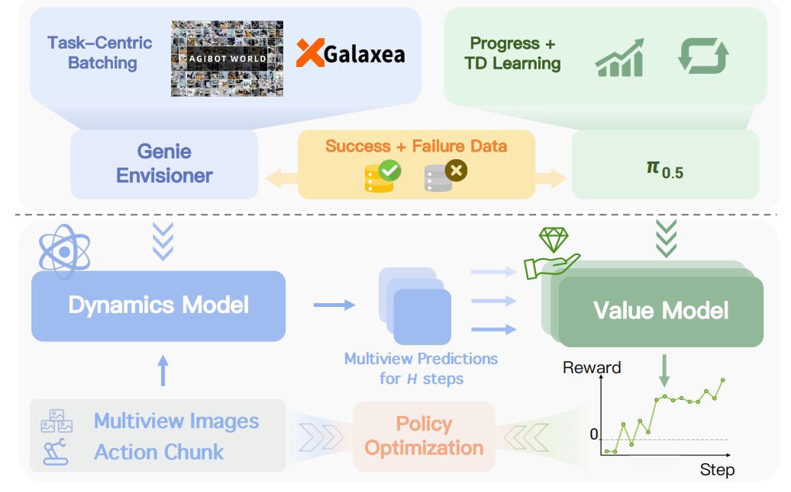

π0.5
该仓库的具身模型基于π0.5进行微调。π0.5 是由 Physical Intelligence 公司发布的视觉-语言-动作（VLA）模型，作为 π0 的迭代升级版本，其核心特点包括：
- 异构数据协同训练：融合多源异构数据进行联合训练，显著提升模型在陌生环境中的泛化能力，首次实现了端到端机器人在全新家庭环境中执行长时程灵巧操作任务（如叠毛巾、整理床铺等，单次任务持续 10–15 分钟）；
- 知识绝缘架构（π0.5-KI）：将动作专家模块模块化“嫁接”至视觉-语言模型，在增强动作生成能力的同时不侵蚀预训练的语义知识，实现“高效训练、强泛化、高精度运动控制”三重目标；
- 分层推理机制：先预测高层语义子任务，再执行低层连续动作，实现抽象任务指令到具体关节控制的端到端映射；
- GemmaRMSNorm 动态调节：在 Transformer 每一层动态调节归一化层，使模型在动作生成的不同阶段具有差异化行为，实现更精细的动作控制。
具体细节请参考：
- 参考论文：https://www.pi.website/blog/pi05
- 参考代码：https://github.com/Physical-Intelligence/openpi/tree/main
Advantage策略模型
Advantage策略模型，取自于 Physical Intelligence发布的 π*****0.6。其核心创新在于 RECAP 训练方法——通过“示范学习、纠错指导、自主实践”三阶段闭环，让机器人能够从真实执行中积累经验、从错误中自主成长，突破传统模仿学习的瓶颈。
- RECAP训练方法：全称为“基于优势条件策略的经验与纠偏强化学习”，该方法整合演示数据、在线自主收集的实践数据以及人类专家的干预数据，分为“示范学习、纠错指导、自主实践”三个阶段，使机器人能够从真实执行中积累经验、从错误中自主成长，彻底突破了传统模仿学习只能逼近“真值”的局限。
- 价值函数（Value Function） ：RECAP的核心组件之一，用于评估任务进展并预测完成某项任务所需的预期时间。该价值函数基于大规模多机器人多任务数据训练，能够为轨迹中的每个动作提供质量评估，从而区分“好动作”与“坏动作”。
- 优势信号（Advantage） ：价值函数计算出每个动作的实际回报与预测价值之间的差值，即优势值A(s,a) = Q(s,a)−V(s)。该优势值用于区分当前动作相比“平均表现”的优势程度，并通过二值化处理形成高/低优势指标，作为策略训练的额外输入，使模型能够在推理时强制选择高优势动作，从而直接从数据中提取出比原始数据更优的决策策略。
具体细节请参考：
基于世界模型的在线强化
该仓库的世界模型，取自于RISE（Reinforcement learning via Imagination for Self-Improving robots），面向真实世界机器人操作的在线强化学习框架，核心创新在于将物理环境交互迁移至想象空间，通过构建组合式世界模型实现策略持续自我提升。
主要特点：
- 组合式世界模型：将仿真任务解耦为动态模型（基于高效视频扩散模型，预测多视角未来状态）与价值模型（基于预训练 VLA 骨干，输出稠密进度信号），两者独立优化，兼顾视觉真实性与控制可控性。
- 想象空间在线强化学习：无需真实世界的昂贵、串行、需人工重置的试错交互，直接在想象环境中展开动作序列，由价值模型计算优势信号（Advantage） ，驱动策略更新，实现可扩展的在线策略学习。
- 策略预热与自循环提升：先通过离线数据（含专家演示、自主 rollout、人工纠正）进行优势条件化策略预热，再利用世界模型不断生成想象轨迹、评估优势、训练策略，形成闭环自提升。
具体细节请参考：
致谢
本项目受到开源机器人和机器人学习项目的启发，特别感谢：
- 开源机器人社区。
- π0.5 / π*0.6：感谢 Physical Intelligence 开源的 VLA 模型及 RECAP 训练方法，为本项目提供了策略基座和优势条件化学习框架。
- RISE：感谢 OpenDriveLab 提出的组合式世界模型与想象空间在线强化学习框架（论文 / 代码），本项目中的世界模型训练与在线 RL 自提升模块均参考其设计。
- LeRobot：感谢 Hugging Face LeRobot 提供的标准化数据集格式和数据采集工具，使本项目的多臂数据流程得以高效构建。
- Genie Envisioner / LTX‑Video：感谢相关团队开源的视频生成模型，为本项目世界模型的实现奠定了高效生成基础。
Retargeting Anything
超强通用运动映射算法与工具 — 将任意一种结构的运动，映射到任意的另一种结构上。
核心特性
- 任意结构支持：通过图/树表示支持任意骨骼拓扑（人形、机械臂、四足、自定义结构）
- 多种映射算法可切换：
映射器 适用场景 特点 direct拓扑相似结构 直接关节角度映射，支持缩放/偏移/混合 ik不同拓扑 任务空间关键点 + 逆运动学求解 end_effector拓扑差异大 末端执行器6D位姿跟踪（参考 TrajBooster） optimization高质量需求 带物理/几何约束的全局优化 composite复杂需求 组合多种映射策略（顺序/混合/分区） latent数据驱动 基于共享隐空间的神经网络映射（参考 ImitationNet） skeleton_agnostic未知对应 基于语义分组的自动映射（参考 PALUM） - 用户自定义映射配置：通过 YAML/JSON 定义任意关节到关节的映射规则
- 模块化设计：映射器可自由切换、组合、扩展
为什么需要 N→M 映射（NtoM Mapping）
问题背景
在机器人遥操作（Teleoperation）场景中，操作端（主手/采集设备/动作捕捉服）与执行端（从手/机器人/机械臂）几乎永远不是同构型的：
- 人形手套有 22 个关节，而目标灵巧手只有 11 个电机
- 动作捕捉服采集全身 50+ DOF，而目标机械臂只有 6 个旋转关节
- 主手是 3 自由度操纵杆，而目标是需要 多关节协调 的软体机器人
传统的 1:1 关节映射（N=M 且同构型）在此完全失效。我们必须回答一个问题：如何用 N 个输入自由度，去控制 M 个输出自由度？
NtoM 映射的本质
NtoM 映射系统是一个通用的自由度转换层，它不关心两端的具体机械结构是否相同，只关心：
输入端的 N 个自由度（关节角度、姿态、力、位移等）→ 通过某种映射规则 → 输出端的 M 个自由度（关节角度、电机转速、位置指令等）
映射方式可以是：
- 直接映射：一个输入关节对应一个输出关节（1:1）
- 线性映射：多个输入的加权线性组合对应一个输出（n:1）
- 非线性映射：通过 IK、优化、神经网络等引入非线性补偿
- 语义映射：基于身体部位分组（如"左臂"→"左臂"），忽略具体关节数量差异
系统示意图
┌─────────────────────────────────────────────────────────────────────┐
│ NtoM 映射系统架构 │
├─────────────────────────────────────────────────────────────────────┤
│ │
│ ┌──────────────┐ ┌──────────────┐ ┌─────────────┐ │
│ │ 输入端 │ │ 映射层 │ │ 输出端 │ │
│ │ (N DOF) │ ────► │ (N→M Mapping)│ ────► │ (M DOF) │ │
│ └──────────────┘ └──────────────┘ └─────────────┘ │
│ │ │ │ │
│ ▼ ▼ ▼ │
│ ┌──────────────┐ ┌──────────────┐ ┌─────────────┐ │
│ │ • 数据手套 │ │ • 直接映射 │ │ • 机械臂关节 │ │
│ │ • 动作捕捉 │ │ • 线性缩放 │ │ • 灵巧手电机 │ │
│ │ • 主手/操纵杆 │ │ • 非线性优化 │ │ • 移动底盘 │ │
│ │ • 肌电信号 │ │ • IK 求解 │ │ • 软体驱动器 │ │
│ │ • 语音/意图 │ │ • 神经网络 │ │ • ... │ │
│ └──────────────┘ │ • 语义分组 │ └─────────────┘ │
│ └──────────────┘ │
│ │
│ 核心能力： │
│ ┌─────────────────────────────────────────────────────────────┐ │
│ │ 不要求同构型 │ 支持 1~n → 1~m 任意对应 │ 支持异形结构操控 │ │
│ └─────────────────────────────────────────────────────────────┘ │
│ │
└─────────────────────────────────────────────────────────────────────┘
典型应用场景
| 场景 | 输入端 (N) | 输出端 (M) | 映射难点 |
|---|---|---|---|
| 人形→机械臂 | 人体右臂 7-DOF | 工业臂 6-DOF | 肩关节球关节 vs 串联旋转关节，需 IK 补偿 |
| 手套→灵巧手 | 数据手套 22-DOF | 欠驱动灵巧手 11-DOF | 多输入合并为少输出，需耦合矩阵 |
| 操纵杆→多机协同 | 3-DOF 摇杆 | 2 台 6-DOF 机械臂 | 1 个输入分配给 12 个输出，需语义分组 |
| 动作捕捉→四足 | 人体全身 50+ DOF | 四足腿 12-DOF | 完全不同的拓扑结构，需 Skeleton-Agnostic 映射 |
| 肌电→假肢 | 2~4 通道肌电信号 | 多自由度假手 | 极度欠驱动，需隐空间/神经网络映射 |
为什么这是遥操作的"刚需"
异构是常态，同构是例外
商业遥操作设备（如 SenseGlove、Leap Motion）与目标机器人的自由度几乎不可能一一对应。自由度冗余/欠缺的天然矛盾
人手臂有 7-DOF（冗余），工业臂通常 6-DOF（正好），欠驱动灵巧手可能只有 4-DOF（不足）。N≠M 是普遍情况。任务空间 vs 关节空间的鸿沟
操作者关心的是"末端去哪里"（任务空间），但机器人接收的是"电机转多少"（关节空间）。NtoM 映射系统正是架在这两者之间的转换层。灵活性的工程需求
遥操作场景经常变化（今天控机械臂，明天控灵巧手），需要一套与具体构型解耦的通用映射框架，而不是为每一对设备写硬编码。
快速开始
安装
pip install -e .
# 或安装可视化依赖
pip install -e ".[viz]"
Python API
from retargeting_anything import create_humanoid_skeleton, create_robot_arm_skeleton
from retargeting_anything.mappers import create_mapper
# 创建结构
source = create_humanoid_skeleton(scale=1.0)
target = create_robot_arm_skeleton()
# 加载/创建运动数据
source_motion = ...
# 创建映射器并执行映射
mapper = create_mapper("ik", source, target, position_scale=1.5)
target_motion = mapper.map_motion(source_motion)
CLI 工具
# 生成示例骨骼
retarget generate-skeleton --type humanoid --output human.json
retarget generate-skeleton --type robot_arm --output robot.json
# 执行映射
retarget map \
--source-skeleton human.json \
--target-skeleton robot.json \
--source-motion motion.npz \
--mapper ik \
--output result.npz
# 可视化
retarget visualize --motion result.npz --frame 0 --output frame.png
# 查看所有映射器
retarget list-mappers
自定义映射配置
name: my_custom_mapping
source_skeleton: human
target_skeleton: robot
global_settings:
position_scale: 1.5
mappings:
# 一对一映射
- source: right_shoulder
target: joint1
type: direct
# 带缩放映射
- source: right_elbow
target: joint2
type: scaled
scale: 1.2
# 多对一混合
- source: [left_shoulder, right_shoulder]
target: torso
type: multi_source
weights: [0.5, 0.5]
# 末端执行器映射
- source: right_wrist
target: end_effector
type: end_effector
技术背景
本项目基于以下机器人运动控制领域的映射算法研究：
- Configuration Space Retargeting：关节空间直接映射 [1]
- Task Space Retargeting + IK：任务空间映射 + 逆运动学 [2]
- Shared Latent Space (ImitationNet, Neural Latent Optimization)：跨结构共享隐空间 [3,4]
- Skeleton-Agnostic Networks (PALUM, SAN)：Transformer/GNN 处理任意拓扑 [5,6]
- End-Effector Trajectory Mapping (TrajBooster)：末端执行器作为共享接口 [7]
- Contact-Aware Retargeting：接触约束保持 [8]
项目结构
retargeting_anything/
├── core/ # 核心库（骨骼、运动、FK/IK、旋转表示）
├── mappers/ # 映射算法插件
├── config/ # 映射配置系统
├── utils/ # IO与可视化工具
├── cli.py # 命令行工具
└── tests/ # 测试
测试
python retargeting_anything/tests/test_basic.py
# 或
pytest retargeting_anything/tests/
示例
# 运行完整演示
python examples/demo_basic.py
bash examples/demo_cli.sh
参考文献
- Ayusawa & Yoshida, "Motion retargeting for humanoid robots based on simultaneous morphing parameter identification and motion optimization", 2017
- Elobaid et al., "Human-Robot Collaboration via Holistic Human Perception and Partner-Aware Control", 2020
- ImitationNet, "Unsupervised Human-to-Robot Motion Retargeting via Shared Latent Space", 2024
- "Efficient Human-Robot Motion Retargeting via Neural Latent Optimization", 2021
- PALUM, "Part-based Attention Learning for Unified Motion Retargeting", 2026
- SAN, "Skeleton-Aware Networks for Deep Motion Retargeting", 2020
- TrajBooster, "Cross-embodiment framework leveraging end-effector trajectories", 2025
- Contact-Aware Retargeting, "Contact-Aware Retargeting of Skinned Motion", ICCV 2021
License
MIT
多格式结构支持
支持的骨骼/结构格式（8种）
| 格式 | 扩展名 | 说明 |
|---|---|---|
| JSON | 自定义格式（原生） | |
| URDF | ROS机器人标准 | |
| MJCF | MuJoCo仿真 | |
| SDF | , | Gazebo仿真 |
| BVH | 动作捕捉 | |
| FBX | 3D动画（ASCII） | |
| glTF/GLB | , | Web3D标准 |
| C3D | 生物力学 |
自动格式检测
上传时自动根据扩展名和内容检测格式：
- → URDF解析
- → 自动区分MJCF/SDF/URDF
- → BVH解析（含运动数据）
- → FBX ASCII解析
- / → glTF解析
- → C3D解析
Web 可视化界面
项目包含一个完整的 Web 可视化平台，支持浏览器中直接进行运动映射和3D仿真展示。
启动 Web 服务
cd web
python app.py
# 或指定端口
python -c "from app import app; app.run(host='0.0.0.0', port=5001)"
然后打开浏览器访问 http://localhost:5001
Web 界面功能
- 上传结构：支持上传 JSON 格式的骨骼定义文件
- 生成示例：一键生成人形/机械臂骨骼，挥手/行走示例运动
- 11种映射算法：下拉选择，即时切换
- 3D 并排仿真：左侧源结构，右侧目标结构，Three.js 实时渲染
- 动画播放控制：播放/暂停/进度条/帧跳转
- 末端执行器轨迹：彩色轨迹线显示运动路径
- 关节 Hover 提示：鼠标悬停显示关节名称和坐标
- 导出结果：支持 NPZ / CSV 格式下载
Web 界面截图
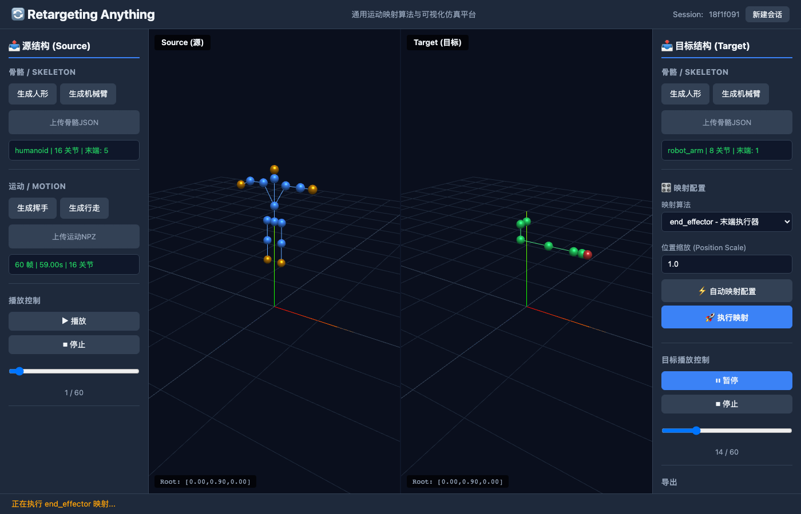
"# 自动穿鞋带机
📄 本文档由 INVrobot 产品文档中心生成，仅供参考。
© 深圳市英诺维信自动化设备有限公司 本仓库代码与文档采用 自定义商业禁止闭源协议 授权， 禁止用于商业闭源目的。未经授权，不得修改、再分发或用于商业用途。
1. 设备简介
1.1. 设备名称
自动穿鞋带机设备
1.2. 市场上常见鞋面与鞋带产品简介
| 产品 | 种类 | 规格 | 材质 | 鞋眼片颜色 | 孔眼形状 | 孔数 | 孔距 | 鞋舌 | |
| 鞋面 | 运动鞋类 | 从童鞋到成年人 主流尺码：（女25~42码）（男35~46码） |
多种/复合 皮/革/布/网等 |
多种/复合 | 多种 园/方/椭圆等 有带鸡眼扣（铝/非金属/钢等等） |
4~10不等 | 不等，孔间距偏差大 | 有/无 有鞋舌的可能有挂带的鞋舌环（也叫定位袢） |
|
| 产品 | 种类 | 规格 | 材质 | 颜色 | 截面形状 | 长度 | 束头直径 | 束头形状/长度 | 穿绳花样 |
| 鞋带 | 运动鞋类 | 根据鞋的种类和孔位数，有不同的长度 | 涤纶（日常运动鞋主流）/高强度运动尼龙（锦纶）/纯棉（复古质感/丙纶/其他花式材质 | 各种 基础纯色/流行亮色/特殊质感的/ |
各种 扁平/圆/椭圆/方形/管状/空心圆绳 |
根据鞋孔数，长度不确定比如：4孔（60~70CM）8孔（140~150cm） | 各种 扁：3~6mm 圆：2.5~5 |
多种 根据不同用途的鞋子，范围从6~20 最通用的运动鞋8~12mm 我们拿到的样品是20mm |
各式各样，变化极大 |
1.3. 设备功能
本设备的核心功能涵盖以下几项关键自动化工序：
**● 鞋面自动夹紧定位：**人工上鞋面，双手启动，自动压紧，自动拉鞋跟；
● 鞋带自动夹紧预置：人工上鞋带，双手启动，自动对中压鞋带，束头插入定位工装。
**● AI鞋眼智能识别：**深度集成视觉与深度学习算法，实现鞋眼位置的的全自动智能识别，并自动生成对应的穿/拉鞋带伺服模组位移坐标。
**● X-Y-Z三轴模组机械手自动插鞋带：**上方X-Y-Z三轴伺服模组配有气动夹手，实现抓取鞋带、穿鞋带。
**● X-Y-Z三轴模组机械手自动拉/送鞋带：**下方X-Y-Z三洲伺服模组配有气动夹手，实现鞋带的下拉、向上举升；
**● 鞋带自动滚/拉：**下方安装有可进退并可打开的对滚装置，步进电机驱动，实现鞋带的向下滚拉，同时设计有拨绳装置，步进电机驱动，使得鞋带向一个方向下垂，避免向上送鞋带时对传送路径的干扰；
**● 信息化MES接入：**软件系统支持与工厂内部的 MES 系统无缝对接，实现设备运行
状态、产量数据的信息化管理。
2. 设备特点
整机的设计、生产与组装严格遵循以下工业级标准：
**● 九大总体设计原则：**设备研发完全围绕“标准化、模块化、可升级、低成本、可视化、
信息化、易维护、安全性、高效率”的原则闭环展开。
**● 长寿命高稼动率：**设备整体的工业设计寿命 ≧ 5 年，综合生产稼动率稳定保持95%
以上。
**● 极佳的抗故障稳定性：**设备的平均无故障工作时间 MTBF ﹥ 1000 小时，大幅降低
了停机维护成本。
**● 快捷的故障修复效率：**所有需要维修维护的部位皆具备良好的空间可达性与工具操作
空间，一般故障平均修复时间 MTTR ≤ 0.5h，重大故障平均修复时间 MTTR ≤ 24h。
3. 设备参数
3.1. 设备概述
3.1.1. 设备外观及功能分区
设备整体具备专业的工业造型设计，符合人机工程学，占地空间小，易操作易维护，设备主体为高强度钣金机架烤漆设计，设计有铝型材防护罩，采用优质PC做封装面板，设计有门易维护。
● 机架上层： 规划为多轴高速直线运动部件、相机、镜头、平面光源及鞋面、鞋带定位夹紧工装。
● 机架中层： 规划为多轴高速直线运动部件、底部辅助平面光源、鞋带滚动下拉装置，鞋带拨动装置、气动拉/送绳装置。
● 机架下部： 独立合理规划为电控箱、工控机等电器控制系统的专业安全组装区域，位
置位于下方两侧或后侧。
● 设备正面： 合理排布有工业视觉检测显示器、设备操作触摸屏及常用控制按钮，工装上下料高度完全便于人工无疲劳进行日常作业。

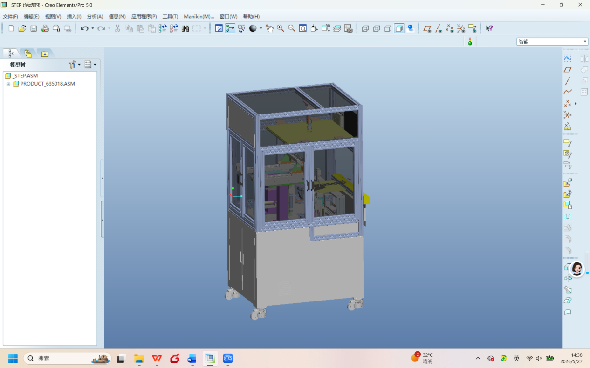
3.1.2. 设备清单
| 序号 | 部组 | 部件名称 | 核心规格 / 品牌选型 | 数量 | 单位 | 备注 |
|---|---|---|---|---|---|---|
| 1 | 主控系统 | PLC控制 | 三菱、威纶通 | 1 | 套 | |
| 2 | 核心驱动 | 步进套装 | 雷赛 | 1 | 套 | X-Y-Z移动轴 |
| 3 | 滚动摩擦拉绳 | 步进套装 | 雷赛 | 1 | 套 | 驱动拉绳摩擦滚轮 |
| 4 | 智能视觉 | 工业相机 | 海康威视 (1200W像素，型号: MV-CS050-10GM) | 1 | 台 | |
| 5 | 视觉组件 | 工业镜头 | 海康 （型号: MVL-MF2518M-5MPE) | 1 | 个 | 工业低畸变 |
| 6 | 照明系统 | 光源及控制器 | 顺尚信 (定制，上光源型号: KP-600-600-K50，下光源型号：KP-200-200；控制器型号：KWDC2-24V200W-4HT) | 1 | 套 | 高清晰度识别 |
| 8 | 鞋面定位 | 鞋面夹紧、鞋跟 | SMC | 1 | 套 | |
| 9 | 鞋带操作机构 | 拔/插、居中夹紧 | SMC | 1 | 套 | |
| 9 | 地脚定位 | 可移动固定地脚 | 原厂定制福马脚轮 | 4 | 个 | 支持整机移动固定 |
| 10 | 系统运算 | 主控工控机 工业显示器 |
国产优质 | 1 | 台 |
3.1.3. 设备工艺流程
根据项目技术源码与设计说明，本设备的自动化运行与工艺维护细化分为以下三种独立的完整流程：
A. 标准规范的开机程
工厂气源接通： 首先接通裁剪车间的外部气源，使用调节阀确保主管道气源压力大于等于 0.6 Mba。
电气强电接通： 引入 AC 220V 设备总电源，将机体外部负荷开关手动打到“ON”状态。
内部弱电使能： 依次合上电控箱内部低压断路器，将弱电电源开关切换至接通状态。
系统层软件加载： 启动电脑工控机，运行上位机设备软件，软件自动通过网线连接PLC主逻辑控制器。
**工艺配方参数调用：**PLC与工控机联网通讯，读取当前的系统参数、轴配置参数以及上一次生产所保留的配方参数。
视觉及硬件初开： 软件底层初始化相机连接，加载相机日常畸变校正参数与工位世界坐标标定矩阵。
硬件释能与复位： 现场人员手动松开设备的急停按钮，按操作界面的“复位”按钮，让整机执行一次完备的空载复位回零程序。
换款与配方： 根据当前工艺任务，在主界面配方下拉框中选择对应产品配方，系统自动加载鞋面型号、相机的曝光、增益、点位信息以及运行速度等参数。
首件确认： 放需要生产的鞋面型号到工装上，双手启动，鞋面自动夹紧，鞋带自动夹紧，视觉系统拍照，完成一整套的自动穿鞋带动作，确认合格后保存参数并进入连续生产模式。
B. 整机复位初始化与安全零位恢复流程
中断及输出关断： 当操作员下发复位指令或设备触发异常后，系统立即停止当前的一切轴运动，并同步切断所有相关的输出信号。
软限位临时解除： 临时解除PLC内部的软限位保护，防止各轴在执行大范围回零动作的过程中误触发软限位锁死。
X-Y-Z机械工作台回零： 上层和下层直线运动 模组X-Y-Z 平台按安全步距回零，控制系统通常遵循先执行 X 轴回零、再执行 Y 轴回零的物理顺序。
机构安全姿态回归： 鞋面压紧装置在上层模组回零后再执行打开动作；下层夹、拉、滚绳装置复位回零后再执行下层模组会令动作；各机构做好安全互锁和连锁。
到位信号安全检查： PLC持续检查各轴、气缸和传感器的到位输入信号，严格确认各个运动机构与装置均已安全到达指定基准位。
C. 自动加工标准循环流程
工位准备与上料： 操作员将鞋面放入定位工装，鞋带预置到定位工装上，双手启动，自动夹紧鞋面和鞋带。
联动打光调稳： 自动启动制工业光源，系统软件在底层自动执行延时，等待光照完全稳定。
数字单次采图： 上位机输出精密相机触发信号，海康相机完成高质量的单次采图，图像数据被实时压入图像缓存或处理队列中。
畸变校正处理： 视觉识别线程实时读取最新缓存图像，并根据当前相机的物理标定参数自动执行镜头的畸变校正。
深度AI特征匹配： 软件自动加载当前产品配方对应的路径模型或识别模板，执行多点匹配或区域识别，经过亚像素级优化筛选，精准生成图像点坐标。
世界机械坐标转换： 视觉中枢读取工位的世界坐标标定矩阵，将计算出的图像点转换为物理世界坐标。
运动队列下发： system 生成可供PLC调用的物理坐标点集，并压入运动控制队列中。
穿鞋带机构同步轨迹穿鞋带： 上下层的X-Y-Z 平台平稳读取待加工点集并联动运动至目标起始点，按PLC设定的穿鞋带轨迹和逻辑进行自动穿带。
成品下料： 鞋面穿绳完成后，所有执行机构都将复位，人工取出穿好鞋带的鞋面，进入下一个循环。


3.1.4. 设备主要功能参数
| 序号 | 核心项目 | 工艺技术参数要求 | 数据来源备注 |
|---|---|---|---|
| 1 | 加工对象外形规格 | 35码~42码 | 常见主流的鞋面尺码 |
| 2 | 视觉系统标定精度 | 可达 ±0.001 mm | 由标定与相机决定 |
| 3 | 工厂输入气源压力 | 工作气压：0.5 ~ 0.7 Mpa (上电规范 ≧ 0.6 Mba) | 需压力显示且可调节 |
| 4 | 工厂配电电压规范 | AC 220V，频率：50Hz | 必须配可靠接地 |
| 5 | 车间运转温湿度 | 工作温度：20 ~ 30 ℃ / 环境相对湿度：40% ~ 60% | 非无尘环境 |
| 6 | 设备噪声环保指标 | 整机全运转噪声规范 < 75dB | 符合国标 |
| 7 | 综合运行稳定性 | 稼动率 ≧ 95% / MTBF ﹥ 1000小时 / 寿命 ≧ 5年 | 工业级不间断连续量产 |
| 8 | 整机外形尺寸 | 1100mmX850mmX1850mm | 以实际设计为准 |
| 9 | CT | 目标CT：55S/只 |
3.1.5. 设备主要功能参数
| 序号 | 项目 | 工厂现场一次配接与对接标准 | 规范备注 |
|---|---|---|---|
| 1 | 安装应用场地 | 鞋厂—穿鞋带车间 | 独立运作，不关联他台 |
| 2 | 无尘与防护级别 | 非无尘净化车间 | 防油雾，无化学品 |
| 3 | 防静电与防火 | 整机外壳及基础地脚需防静电；防火等级符合国家标准 | 外壳及电器安装板可靠接地 |
| 4 | 外部动力接口预留 | 预留标准的电、气接口 | 便于安装及位置微调 |
3.2. 设备结构组成
3.2.1. 主机机架
主机机架由优质高标号型材经过高强度焊接总成、焊后将表面全部打磨平整，外部钣金保护外壳采用工业造型设计，表面实施多道均匀美观的防锈烤漆工艺，无色差与掉漆变形隐患。为防止由于各直线模组高速高动态行走所带来的细微机械共振，机架设计安装有高强度钢制台面板，所有机构安装在台面板上。防护门及可拆卸封板内侧设计有精密的卡口防漏灰挡边，活动封门均配有高可靠性按压式安全门锁。机架下层的内部电箱安装板与电箱之间通过高负荷螺柱焊接与螺母锁定，电气元件排列整齐标识清晰，并配有对流冷却风扇、安全护线套灯。机体下方坚固部署了 4 组支持可移动或长效固定的原装福马脚轮地脚。

3.2.2. 主机防护罩
位于主机架上方，骨架由优质铝合金型材配有铝合金框架的门，防护罩的固定封板和门的封板都是由优质的透明PC板加工而成，操作面板安装在防护罩的正前上方，工业显示器和触摸屏安装在操作面板上，报警灯安装在防护罩上方角部位置。
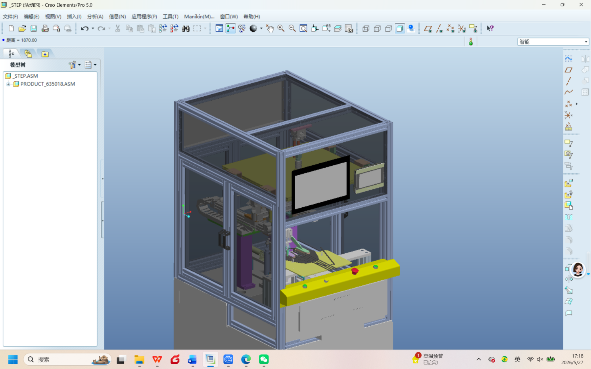
3.2.3. 核心功能区细节
核心功能部件包括鞋面定位夹紧工装，上层X-Y-Z模组机械手+气动夹手，下层X-Y-Z模组机械手+气动夹手，下方拉绳和滚绳、拨绳装置，如图示：
鞋面、鞋带定位工装
下层X-Y-Z模组机械手
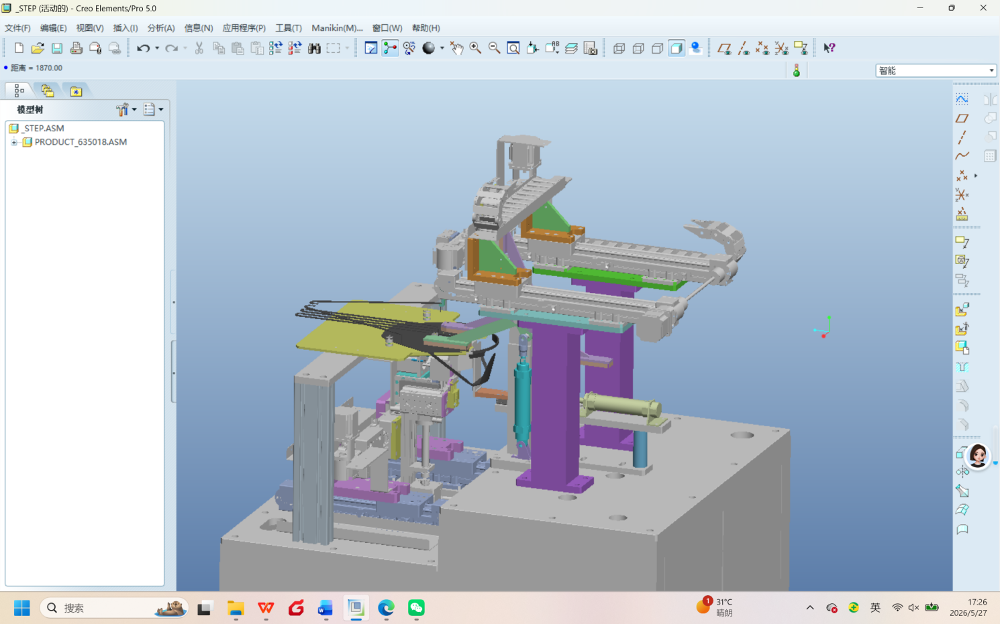
鞋面压紧装置
鞋根拉伸装置
鞋带下拉与举升装置
鞋带滚拉装置
鞋带拨动装置
鞋带居中压紧装置
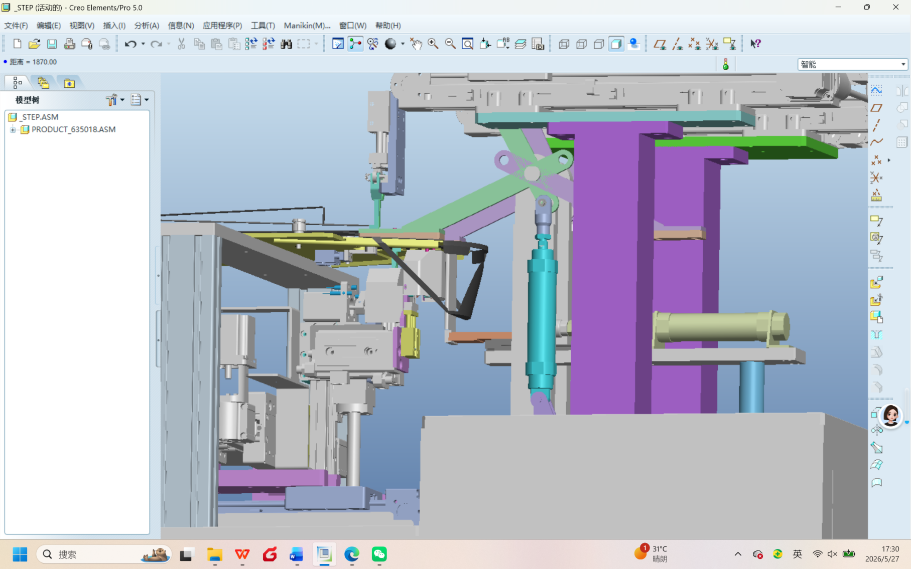
3.2.4. 相机光源布置
| 序号 | 硬件子系统 | 精细化配置参数与结构设计 | 备注说明 |
|---|---|---|---|
| 1 | 顶部视觉相机配置 | 标配海康 MV-CS050-10GM 高性能工业相机，搭配低畸变高清工业镜头，物距保持在500-550mm。相机采用顶部垂直安装方式，针对鞋面工装进行居中布局设计，支持20mm垂直高度微调范围，可适配不同鞋型及工装高度变化需求。系统支持外部IO触发高速采集提高长时间连续运行稳定性。 | 视觉系统检测精度最高可达±0.001mm，在标准标定环境下具备高稳定性与重复检测一致性。支持高速连续图像采集，满足自动化产线长时间稳定运行需求。 |
| 2 | 多模式打光照明 | 采用顺尚信高功率定制光源方案。上方配置 KP-600-600-K50-W 150W 平面光源（照度0距离：5 |
光照环境均匀稳定，可有效抑制鞋面反光、阴影及局部过曝问题，提高图像边缘对比度与缺陷识别可靠性。支持长时间稳定运行，满足高精度机器视觉检测需求 |
下方平面补光光源
带中心孔的平面光源
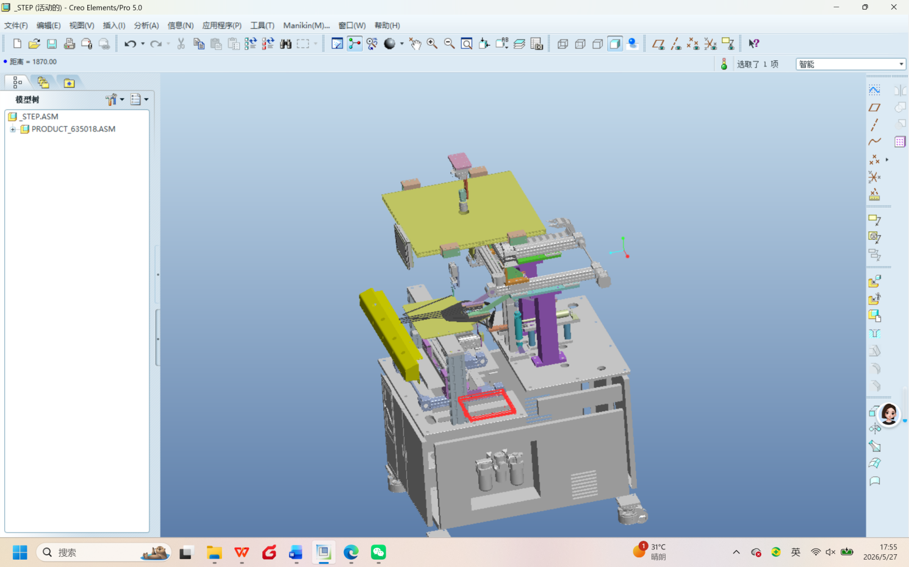
3.2.4. 设备常见异常现象及现场处理建议
| 序号 | 异常现象 | 可能原因排查 | 推荐的现场标准化处理建议 |
|---|---|---|---|
| 1 | 上位机与PLC连接失败 | 连接网线损坏、上位机未通电、IP不通 | 检查电源、重新插拔网线、确认IP，并重启上位机。 |
| 2 | 相机实时无画面 | 软件采集未打开、相机驱动异常、屏蔽线缆松动 | 检查相机电源及物理连线、查看网卡采集状态并重启软件。 |
| 3 | 视觉识别加工偏移 | 标定文件失效、材料大幅起皱、镜头或支架发生位移 | 严禁移动相机支架，重新进行畸变校正和世界坐标标定。 |
| 4 | 空载或带载复位失败 | 工厂外部气压不足、到位传感器损坏、工装及各运动部件卡滞 | 确认总压力 ≧ 0.6Mba，排查传感器信号及限位、各运动轴、气缸状态。 |
4. 主要配件清单
| 序号 | 核心配件名称 | 标准数量(单位) | 选型品牌与关键规格技术备注 |
|---|---|---|---|
| 1 | PLC | 1 (套) | 型号：汇川 Easy 522-0808TN |
| 2 | 高性能步进电机套装 | 1 (套) | 雷赛智能 (DM3J-EC522) |
| 3 | 数字式步进电机及驱动套装 | 1 (套) | 雷赛 (闭环步进控制，用于通用型工装的电动调宽调节轴) |
| 4 | 1200W高分辨工业相机总成 | 1 (台) | 海康威视 (型号: MV-CS050-10GM) |
| 5 | 工业高清低畸变光学镜头 | 1 (个) | 海康威视(型号: MVL-MF2518M-5MPE) |
| 6 | 定制高功率工业光源及控制器 | 1 (套) | 上光源：顺尚信 (功率 ：150W，核心型号: KP-600-600-K50, 照度0距离5-7WLUX) 下光源：顺尚信 (功率 ：26W，核心型号: KP-200-200, 照度0距离6-8WLUX) 控制器(功率：200W,型号：KWDC2-24V200W-4HT) |
| 7 | 工控机及显示器 | 1 (台) | 工控机：爱宝拓酷睿i74500U(双网);8G/256G固态/WIFI 显示器：ZHIXIANDA(Q1516,分辨率1920*1080) |
| 8 | 直线模组 | 1批 | 成都西艾科斯智能科技有限公司：定制模组 |
5. 上位机软件及控制系统说明
5.1. 系统简介与主要功能
本设备配套“鞋绳穿孔系统”上位机软件，采用工业视觉识别、坐标标定换算与 Modbus TCP 通讯相结合的控制架构，面向鞋绳/鞋孔类产品的图像采集、点位识别、坐标输出及联机调试应用。操作人员通过本系统可完成页面切换、相机采图、图像识别、坐标查看、标定入口操作、寄存器监控及离线验证等工作。系统当前界面可见的核心功能如下：
● 主界面管理： 配备主页、鞋孔坐标页、Modbus 监控页等功能界面，界面分区清晰，便于操作人员快速进入对应工作模块。
● 相机控制： 实现相机设备查找、打开、关闭、连续采集、触发采集及单次软触发等完整采图控制功能。
● 图像参数调节： 支持对曝光、增益等关键成像参数进行读取与设置，以适配不同材质、不同光照及不同现场工况下的成像要求。
● 视觉识别： 对采集图像进行目标识别与点位提取，并将识别结果实时显示于图像界面，便于现场确认。
● 结果显示： 支持识别点位数量显示及多组坐标结果显示，便于人工校核和工艺确认。
● 通讯输出： 内置纯 C# 实现的 Modbus TCP 从站，对外提供保持寄存器读写接口，并将识别结果按固定寄存器地址写出。
● 结果留存： 支持保存原始图像与识别结果图，为后续质量追溯、工艺分析及项目归档提供数据支撑。
5.2. 主界面核心区域与按钮作用
| 主界面区域 / 按钮名称 | 具体控制作用与响应说明 |
|---|---|
| 图像窗口 | 显示相机的当前采集画面以及视觉识别计算结果 |
| 鞋孔坐标页 | 显示算法识别的点位以及可以将传递过去的点位相比较。 |
| Modbus监控页 | 用于查看寄存器实时值，也可手工写入地址和值做联调测试。 |
| 写入 | 在 Modbus 监控页手工写寄存器，用于模拟外部设备操作。 |
| 离线 | 直接对图片执行离线识别、坐标换算与寄存器写入，便于验证功能。 |
软件系统同步配备有图像显示与坐标结果展示方式：
pictureBox1： 主图像显示窗口，用于显示当前采集图像或识别后的结果图。
界面中预留了 12 个点位结果文本框，分别展示点1到点12的世界坐标。
识别后的结果图可叠加匹配点、轮廓或定位标记，便于判断算法效果是否正常。
5.3. 硬件控制拓扑与信号逻辑关系
本设备上位机软件系统通过工业以太网与现场控制层建立标准化通讯连接，并以工业相机、光源单元、视觉处理单元及外部控制系统构成完整的视觉识别与数据交互拓扑。各核心子系统之间的信号逻辑关系如下：
视觉成像中枢： 工业相机负责采集鞋绳/鞋孔区域的目标图像，并将图像数据实时传输至上位机视觉处理单元。图像显示窗口同步反馈当前采集画面及识别结果，为现场调试与状态确认提供直观依据。
光源协同单元： 系统设置上光源与下光源两路照明控制逻辑，通过寄存器命令实现开启、关闭与状态反馈，确保目标区域在不同工况下均可获得稳定、一致的成像条件，为识别精度提供基础保障。
视觉处理单元： 上位机软件作为系统核心处理平台，承担图像接收、参数调节、目标识别、点位提取、坐标换算、结果显示及通讯输出等关键任务，是整套视觉系统的数据决策中心。
工业通讯接口： 上位机通过 Modbus TCP 标准协议与 PLC 或外部控制系统进行数据交互，实现流程启动、状态反馈、识别结果输出及联机调试，具备良好的系统兼容性与集成便利性。
坐标输出单元： 识别完成后，系统将目标点位结果转换为标准世界坐标，并按约定寄存器区域顺序写入，供下位控制系统直接读取调用，从而形成视觉识别到执行控制之间的标准化数据通道。
5.4. 软件系统运行流程架构图
根据PLC与上位机联动控制，整机控制流程通过以下架构图形式表述：

📜 授权协议
本仓库代码与文档采用 自定义商业禁止闭源协议 授权。
- ✅ 允许：个人学习、研究、非商业用途的引用与分发
- ❌ 禁止：商业闭源使用、未经授权的修改与再分发
详情见：LICENSE
深圳市英诺维信自动化设备有限公司
🏠 INVrobot 产品文档中心
"# 无缝筒子布激光裁切机
📄 本文档由 INVrobot 产品文档中心生成，仅供参考。
© 深圳市英诺维信自动化设备有限公司 本仓库代码与文档采用 自定义商业禁止闭源协议 授权， 禁止用于商业闭源目的。未经授权，不得修改、再分发或用于商业用途。
1. 设备简介
1.1. 设备名称
无缝筒子布激光裁切机设备
1.2. 设备来料情况
设备适用的物料特征及具体规格如下：
● 工作对象： 各类无缝筒子布。
● 规格范围： 宽度范围为 25~58 CM，长度最大值 MAX 75 CM。
1.3. 设备功能
本设备的核心功能涵盖以下几项关键自动化工序：
**● 双工位高效操作：**采用双工位交互结构，人工进行上料与下料操作，通过脚踏启动
（控制系统及硬件接口预留了升级空间，后期可扩展升级为机器人自动上下料）。
**● AI剪裁线智能识别：**深度集成视觉与深度学习算法，实现无缝筒子布正反面剪裁线
的全自动智能识别，并自动生成对应的激光裁切引导轨迹。
**● 高精密自动裁切：**采用配置的高性能激光系统，按照识别路径完成裁切线的内中外
的高精度的全自动激光裁切作业。
**● 集中联动自动排烟：**裁切工装自带废气排气接口，剪裁时自动联动工厂排风，实现
烟尘碎屑的高效排烟收集。
**● 信息化MES接入：**软件系统支持与工厂内部的 MES 系统无缝对接，实现设备运行
状态、产量数据的信息化管理。
**● 工装可电动调宽：**裁切工装具备高度通用性，可通过伺服控制根据配方自动进行宽
度精细调节。
2. 设备特点
整机的设计、生产与组装严格遵循以下工业级标准：
**● 九大总体设计原则：**设备研发完全围绕“标准化、模块化、可升级、低成本、可视化、
信息化、易维护、安全性、高效率”的原则闭环展开。
**● 长寿命高稼动率：**设备整体的工业设计寿命 ≧ 5 年，综合生产稼动率稳定保持95%
以上。
**● 极佳的抗故障稳定性：**设备的平均无故障工作时间 MTBF ﹥ 1000 小时，大幅降低
了停机维护成本。
**● 快捷的故障修复效率：**所有需要维修维护的部位皆具备良好的空间可达性与工具操作
空间，一般故障平均修复时间 MTTR ≤ 0.5h，重大故障平均修复时间 MTTR ≤ 24h。
3. 设备参数
3.1. 设备概述
3.1.1. 设备外观及功能分区
外壳整体具备专业的工业造型设计，焊缝平整美观，采用钣金结构辅以严密的表面烤漆防锈工艺，满足裁剪车间防静电与无尘化操作规范：
● 机架上部： 规划为多轴高速直线运动部件、相机、镜头、光源及激光头组件的精密组
装与定位安装台面。
● 机架下部： 独立合理规划为电控箱、工控机等电器控制系统的专业安全组装区域，位
置位于下方两侧或后侧。
● 设备正面： 合理排布有工业视觉检测显示器、设备操作触摸屏及常用控制按钮，下方
的上下料区空间高度完全便于人工无疲劳进行日常作业。

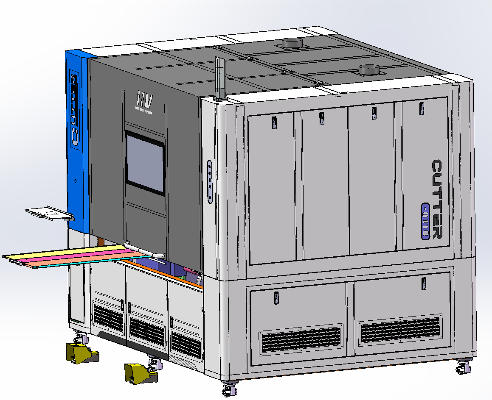
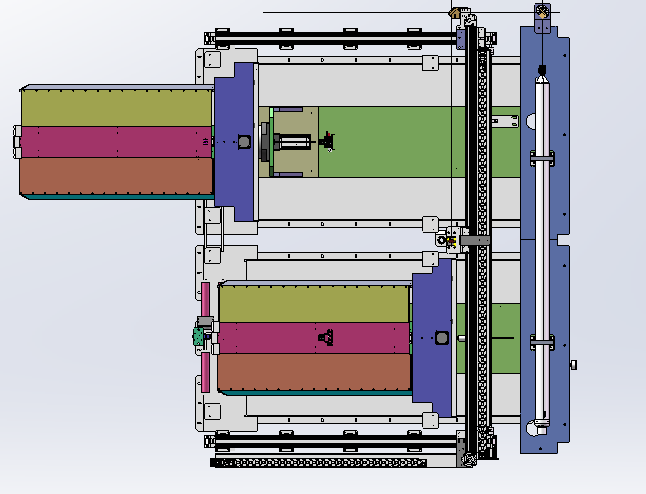
3.1.2. 设备清单
| 序号 | 部组 | 部件名称 | 核心规格 / 品牌选型 | 数量 | 单位 | 备注 |
|---|---|---|---|---|---|---|
| 1 | 主控系统 | 运动控制卡 | 正运动 | 1 | 套 | 多轴运动协调 |
| 2 | 核心驱动 | 伺服套装 | 汇川 | 1 | 套 | XY移动轴及旋转 |
| 3 | 工装宽度调节与翻转 | 步进套装 | 雷赛 | 1 | 套 | 通用工装板宽调节 |
| 4 | 智能视觉 | 工业相机 | 海康威视 (1200W像素，型号: MV-CH120-10GM) | 2 | 台 | 双相机独立识别 |
| 5 | 视觉组件 | 工业镜头 | 海康 / 欧克视光电 (型号: FA1216) | 2 | 个 | 工业低畸变 |
| 6 | 照明系统 | 光源及控制器 | 顺尚信 (定制，141.6W，型号: KCS-KP-600-500-K50-W) | 2 | 套 | 高清晰度识别 |
| 7 | 热管理 | 水冷机 / 冷水机 | 特域机电 (型号: CW-5200TH) | 1 | 台 | AC 1P 220-240V |
| 8 | 激光切削 | CO2激光器系统 | 永利激光 (含激光器YL-U2、激光管、激光头及光路) | 1 | 套 | 特定轨迹行走裁剪 |
| 9 | 地脚定位 | 可移动固定地脚 | 原厂定制福马脚轮 | 4 | 个 | 支持整机移动固定 |
| 10 | 系统运算 | 主控工控机 | 带独立显卡 (参考轮毂工控机配置指标)，高清大屏工业显示器 | 1 | 台 | 支持单独或触摸控制 |
3.1.3. 设备工艺流程
根据项目技术源码与设计说明，本设备的自动化运行与工艺维护细化分为以下三种独立的完整流程：
A. 标准规范的开机上电与换款调试流程
工厂气源接通： 首先接通裁剪车间的外部气源，使用调节阀确保主管道气源压力大于等于 0.6 Mba。
电气强电接通： 引入 AC 220V 或 AC 380V 设备总电源，将机体外部负荷开关手动打到“ON”状态。
内部弱电使能： 依次合上电控箱内部低压断路器，将弱电电源开关切换至接通状态。
系统层软件加载： 启动电脑工控机，运行上位机设备软件，软件自动通过网线连接多轴运动控制卡。
工艺配方参数调用： 软件联网读取当前的系统参数、轴配置参数以及上一次生产所保留的配方参数。
视觉及硬件初开： 软件底层初始化左/右相机连接，加载左右相机日常畸变校正参数与 A/B 工位世界坐标标定矩阵。
硬件释能与复位： 现场人员手动松开左、右两侧的硬件急停按钮，点击软件界面上的“复位”按钮，让整机执行一次完备的空载复位回零程序。
下拉换款与配方同步： 根据当前工艺任务，在主界面配方下拉框中选择对应产品配方，系统自动加载板宽、曝光、增益、激光功率和切割速度。
工装调宽与首件验证： 通用电调工装根据调宽参数自动调整夹持边界以完美匹配本次筒子布实际宽度（25~60CM）。人工放置试切样件，踩下脚踏启动加工，严格核对首件切割位置、尺寸与切边烧焦质量，确认合格后保存参数并切入连续量产模式。
B. 整机复位初始化与安全零位恢复流程
中断及输出关断： 当操作员下发复位指令或设备触发异常后，系统立即停止当前的一切轴向运动，并同步切断所有相关的输出信号。
软限位临时解除： 临时解除控制卡内部的软限位保护，防止各轴在执行大范围回零动作的过程中误触发软限位锁死。
XY机械工作台回零： 直线运动 XY 平台按安全步距回零，控制系统通常遵循先执行 X 轴回零、再执行 Y 轴回零的物理顺序。
机构安全姿态回归： A/B 双工位的托举机构（180度气缸）执行下降动作回到基础零位；同时 A/B 伸缩机构完全缩回，以防止干涉主轴回零。
到位信号安全检查： 控制卡持续检查各气缸和传感器的到位输入信号，严格确认托举和伸缩机构均已安全到达指定基准位。
**旋转轴使能与回零：**系统给A/B旋转轴伺服通电使能，控制旋转轴平稳执行回零动作。
板宽复位与软限位恢复： 板宽调整轴执行归零位置恢复，确定零点后重新启用软限位保护机制。
配方自适应开合： 系统读取当前加载配方的宽度指标，驱动雷赛步进轴自动将 A/B 工装板的调整板宽开合到位。
工位伸出待命： 双工位平稳伸出到标准准备工作状态，正面上位机软件切换为“可启动”状态提示。
C. 双工位自动加工标准循环流程
工位准备与上料： 操作员将无缝筒子布材料平稳放置到 A 或 B 工位，工位根据配方保持相应的夹持板宽，机构进入识别前的准备姿态，随后相应工位切入“等待拍照”状态。
联动打光调稳： 对应触发工位自动启动己侧的定制工业光源，系统软件在底层自动执行延时，等待光照完全稳定。
数字单次采图： 上位机输出精密相机触发信号，海康相机完成高质量的单次采图，图像数据被实时压入该工位的图像缓存或处理队列中。
畸变校正处理： 视觉识别线程实时读取最新缓存图像，并根据当前相机的物理标定参数自动执行镜头的畸变校正。
深度AI特征匹配： 软件自动加载当前产品配方对应的路径模型或识别模板，执行多点匹配或区域识别，经过亚像素级优化筛选，精准生成图像点坐标。
世界机械坐标转换： 视觉中枢读取当前工位的世界坐标标定矩阵，将计算出的图像点转换为物理世界坐标，并结合配方和板宽进行智能补偿。
运动队列下发： system 生成可供控制卡调用的物理坐标点集，并压入对应加工工位的运动控制队列中。
激光同步轨迹切割： XY 平台平稳读取待加工点集并联动运动至目标起始点，永利激光器功率按配方设置到位，激光跟随插补路径输出进行高能裁剪。
循环收尾出料： 轨迹运行加工结束后，软件关闭激光输出，XY平台退出加工危险区域，工装进退模组在缩回到位信号满足后驱动工位自动伸出到便于人工上下料的安全待机状态。
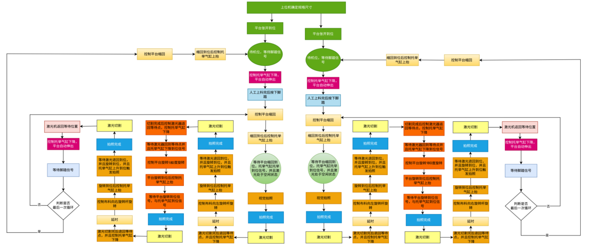
3.1.4. 设备主要功能参数
| 序号 | 核心项目 | 工艺技术参数要求 | 数据来源备注 |
|---|---|---|---|
| 1 | 加工对象外形规格 | 宽度：25 ~ 58 CM / 长度：最大 MAX 75 CM | 无缝筒子布物料 |
| 2 | 视觉系统标定精度 | 可达 ±0.001 mm | 由标定与相机决定 |
| 3 | 工厂输入气源压力 | 工作气压：0.5 ~ 0.7 Mpa (上电规范 ≧ 0.6 Mba) | 需压力显示且可调节 |
| 4 | 工厂配电电压规范 | AC 220V 或 AC 380V，频率：50Hz | 必须配可靠接地 |
| 5 | 车间运转温湿度 | 工作温度：20 ~ 30 ℃ / 环境相对湿度：40% ~ 60% | 非无尘，防静电环境 |
| 6 | 设备噪声环保指标 | 整机全运转噪声规范 < 80 dB | 符合国标，带强制排烟 |
| 7 | 综合运行稳定性 | 稼动率 ≧ 95% / MTBF ﹥ 1000小时 / 寿命 ≧ 5年 | 工业级不间断连续量产 |
| 8 | 机械架构框架尺寸 | （原厂加工设计图纸待最终归档敲定） | 参考3D与2D工程总图 |
3.1.5. 设备主要功能参数
| 序号 | 项目 | 工厂现场一次配接与对接标准 | 规范备注 |
|---|---|---|---|
| 1 | 安装应用车间 | 无缝针织工厂的专用裁剪车间 | 独立运作，不关联他台 |
| 2 | 无尘与防护级别 | 非无尘净化车间，现场必须配置高效排风排烟管道 | 防油雾，无化学品 |
| 3 | 防静电与防火 | 整机外壳及基础地脚需防静电；防火等级符合国家标准 | 外壳及垫板可靠接地 |
| 4 | 外部动力接口预留 | 预留标准的电、气、一次水及工厂吸风排烟总线接口 | 便于安装及位置微调 |
3.2. 设备结构组成
3.2.1. 主机机架及钣金外壳
机架由优质高标号型材经过高强度焊接总成、焊后将表面全部打磨平整，外部钣金保护外壳采用专业的现代工业造型设计，表面实施多道均匀美观的防锈烤漆工艺，无色差与掉漆变形隐患。为防止由于激光高速高动态行走所带来的细微机械共振，面积较大的钣金件内部均科学焊接有加强筋或抗振加强板。防护门及可拆卸封板内侧设计有精密的卡口防漏灰挡边，活动封门均配有高可靠性带调节螺丝的紧固按压式安全门锁。机架下层的内部电箱安装板与电箱之间通过高负荷螺柱焊接与螺母锁定，电气元件排列整齐标识清晰，并配有对流冷却风扇、安全护线套与LED箱内高亮照明灯。机体下方坚固部署了 4 组支持可移动或长效固定的原装福马脚轮地脚。
主机架如下图示：
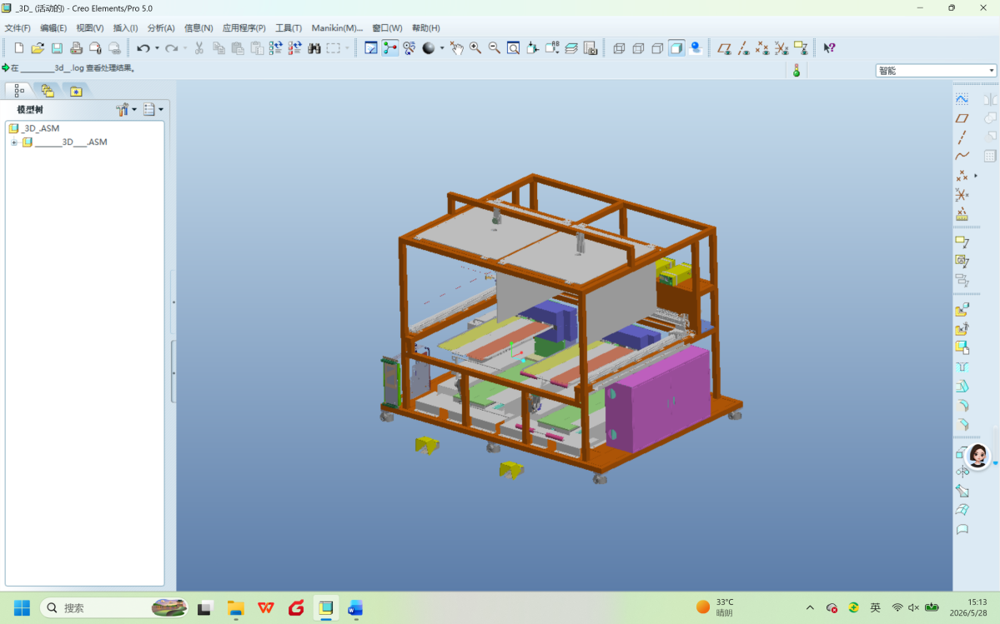
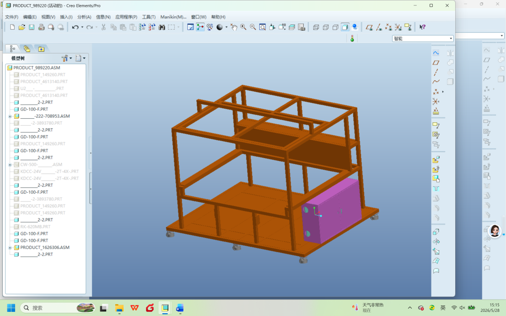
方通焊接烤漆整体机架
外壳防护罩如下图示：

3.2.2. 上料及成品检验区
该区域位于设备正面操作面，操作高度和结构布局完全遵照人机工程学设计，主要由通用型电动可调变宽裁切工装、工装进退移动模组以及内含的排烟吸风管道精密组成。其中工装进退移动模组采用气动驱动，底座由 2 条坚固的双滑块直线导轨提供刚性支撑，并配有行程硬件限位开关及轻薄坦克链托链槽。工装核心结构融合了扩张、收缩与翻转，能有效带动筒子布物料在工装上实现张紧、放松与快速对位。整个工位在结构与控制链上均保留了标准的模块化接口，可随时向上升级兼容，无缝扩展机器人全自动上下料流水线。
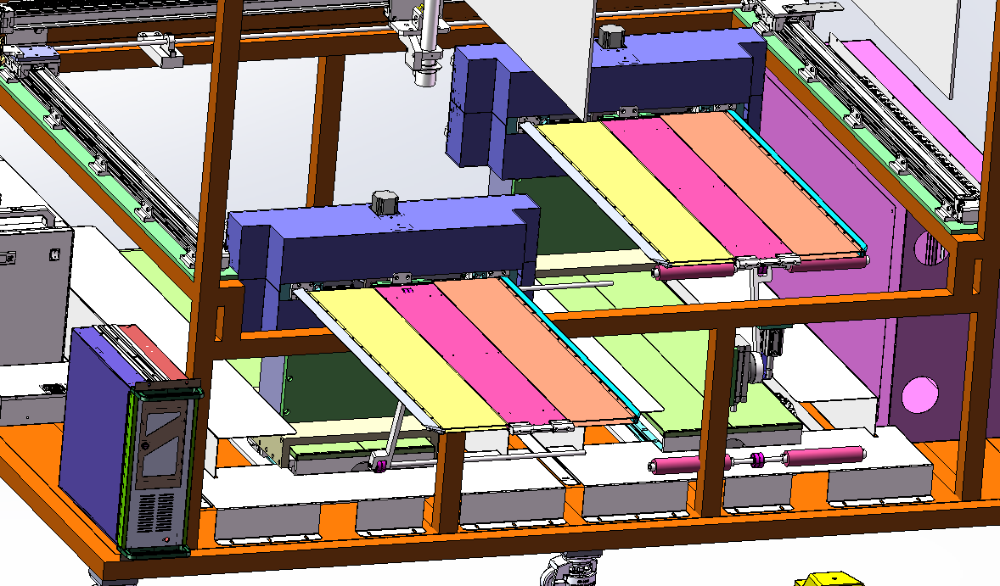
3.2.3. 电调裁切工装
工装电动开合机构
工装可实现前进后退、翻转、工装板可扩张和收缩，以适应不同规格尺寸的筒子布自动裁切，工装构造如下：
工装进退装置（气动）
工装电动翻转机构

3.2.4. 运动平台与标定功能参数细节
| 序号 | 硬件子系统 | 精细化配置参数与结构设计 | 备注说明 |
|---|---|---|---|
| 1 | X-Y移动直线模组 | 前后X轴及左右Y轴均采用同步带高速直线模组配合大功率伺服驱动，同步带进行传动增速。运动末端及极限位置均配置限位开关与物理硬缓冲阻尼，电缆线束保护走轻薄随动坦克链。 | 刚性紧固件全部采用不锈钢材料 |
| 2 | 顶部视觉相机配置 | 标配海康机器人 1200W 高像素工业相机与低畸变高清镜头，物距保持在 1000~1200mm。垂直针对工装进行居中布置，设计有 100mm 的垂直高度微调范围，并支持加装相机专用空气冷却风管。 | 视觉系统检测精度达 ±0.001mm |
| 3 | 多模式打光照明 | 采用顺尚信高功率 141.6W 定制光源。支持方案：顶部开孔 2000mm×1300mm 双孔平面四面发光光源；每个工位周围都放置有补光板 | 光照环境稳定，防止图像反光过曝 |
3.2.5. 设备常见异常现象及现场处理建议
| 序号 | 异常现象 | 可能原因排查 | 推荐的现场标准化处理建议 |
|---|---|---|---|
| 1 | 控制卡连接失败 | 连接网线损坏、运动控制器未通电、IP不通 | 检查控制器电源、重新插拔网线、确认IP，并重启上位机。 |
| 2 | 相机实时无画面 | 软件采集未打开、相机驱动异常、屏蔽线缆松动 | 检查相机电源及物理连线、查看网卡采集状态并重启软件。 |
| 3 | 视觉识别加工偏移 | 标定文件失效、材料大幅起皱、镜头或支架发生位移 | 严禁移动相机支架，重新进行畸变校正和世界坐标标定。 |
| 4 | 空载或带载复位失败 | 工厂外部气压不足、到位传感器损坏、工装卡滞 | 确认总压力 ≧ 0.6Mba，排查传感器信号及限位、气缸状态。 |
| 5 | 物料切不断或烧边明显 | 速度与激光功率不匹配、焦距异常、材料批次变化 | 配合优化工艺配方参数，测量并校准光路，调整焦距。 |
****
4. 主要配件清单
| 序号 | 核心配件名称 | 标准数量(单位) | 选型品牌与关键规格技术备注 |
|---|---|---|---|
| 1 | 多轴高速联动运动控制卡 | 1 (套) | 正运动 (主控多轴插补、底层工艺逻辑与IO监控) |
| 2 | 高性能交流伺服电机套装 | 1 (套) | 汇川 (大惯量伺服，全面驱动XY模组及高动态旋转轴) |
| 3 | 数字式步进电机及驱动套装 | 1 (套) | 雷赛 (闭环步进控制，用于通用型工装的电动调宽调节轴) |
| 4 | 1200W高分辨工业相机总成 | 2 (台) | 海康威视 (型号: MV-CH120-10GM，左右相机独立并行采图) |
| 5 | 工业高清低畸变光学镜头 | 2 (个) | 欧克视 (上海) 光电 (型号: FA1216，高解析低畸变匹配) |
| 6 | 定制高功率工业光源及控制器 | 2 (套) | 顺尚信 (功率 141.6W，核心型号: KCS-KP-600-500-K50-W) |
| 7 | 激光专用恒温冷水机组件 | 1 (台) | 特域机电 (型号: CW-5200TH，AC单相 220V 精密水循环冷却) |
| 8 | CO2激光器核心物理系统 | 1 (套) | 永利激光 (高稳定激光器 YL-U2，含专用激光管、激光头及光路) |
5. 上位机软件及控制系统说明
5.1. 系统简介与主要功能
本设备配备“激光切割机 双相机 V12”上位机软件系统，这是一套带 A/B 双工位、双相机视觉识别、激光加工、多轴运动控制和气缸机构动作的完整控制中枢。操作人员通过该系统可高效完成配方切换、图像采集、相机标定、参数设置、自动加工、状态监控和安全异常处理。系统核心功能如下：
配方管理： 完整保存不同产品的尺寸、曝光、增益、激光功率、切割速度等核心工艺参数。
双相机控制： 实现左/右相机完全独立的图像采集、独立参数调节以及独立标定。
视觉定位： 自动执行镜头畸变校正、世界坐标标定、模板识别以及高精度的坐标转换。
运动控制： 精密驱动 XY 平台直线位移、A/B 工位旋转轴以及 A/B 工位板宽调整轴。
机构动作： 协调控制 A/B 工位托举机构的升降以及 A/B 工位伸缩机构的进退动作。
安全控制： 集成急停、复位、软硬限位保护、状态灯号、蜂鸣器和全面 IO 状态监控。
自动加工： 实现 A/B 双工位加工流程的多线程协同与并行高效运转。
5.2. 主界面核心区域与按钮作用
| 主界面区域 / 按钮名称 | 具体控制作用与响应说明 |
|---|---|
| 左图像窗口 / 右图像窗口 | 实时显示左相机、右相机的当前采集画面以及视觉识别计算结果 |
| 配方下拉框 | 用于快速选择当前生产的产品或对应的工艺配方。 |
| 启动 | 触发并开始整机双工位的全自动运行生产流程。 |
| 结束 | 平稳结束当前批次的运行，清空当前处理队列。 |
| 急停 | 立即停止所有机械轴的运动并关闭激光等相关控制输出。 |
| 复位 | 解除硬件急停状态后，重新执行整机轴回零、复位和机构恢复初始化。 |
| 左平台畸变校正 / 右平台畸变校正 | 用于左/右两侧相机的高精密镜头畸变参数标定。 |
| 世界坐标标定 | 用于将图像像素坐标系精准转换到机械世界物理坐标系。 |
| 系统设置 | 用于进入激光、轴参数及设备底层硬件配置界面。 |
| 状态监控 | 用于查看所有输入输出（IO）口的实时数字状态，辅助进行故障排查。 |
| 激光切割速度 | 实时查看或在线修改当前配方所绑定的激光切割速度。 |
软件系统同步配备有高显见度的三色状态灯号与蜂鸣器提示机制：
绿灯常亮： 设备当前正处于自动加工运行状态。
黄灯常亮： 设备处于空闲或待机准备状态。
黄灯闪烁或复位提示： 设备正在执行回零复位或机构恢复初始状态。
红灯常亮 + 蜂鸣器： 设备已进入急停锁死状态或触发了严重的异常报警。
蓝灯： 用于批次结束后的状态辅助提示。
5.3. 硬件控制拓扑与信号逻辑关系
上位机软件通过网线连接核心运动控制卡，以此构建整机拓扑网络。各子系统及元器件的底层信号交互逻辑如下：
视觉成像中枢： 左右两组相机通过独立网关将图像采集数据实时反馈给正面上位机软件。上位机通过控制卡 IO 输出口控制光源控制器的明暗开关。
激光动力中枢： 运动控制卡通过模拟量模块（输出 0-5V 模拟信号）精密调节激光电源控制器，进而实时控制激光器的输出功率；同步通过 IO 信号联动控制抽风泵、激光水冷机运转，以及控制吹气电磁阀的开闭。
总线运动轴系： 运动控制卡通过 EtherCAT 总线网络高速联动控制激光 X 轴伺服、激光 Y 轴伺服以及工位旋转轴伺服。各旋转轴均配置有一个专用的传感器用来精准锚定原点位置。
气动执行与反馈： 现场配有左/右脚踏控制按钮。当按下脚踏时，控制卡输出 IO 命令给对应侧的电磁阀，驱动平台伸出/缩回气缸以及托举机构（180度气缸）动作，气缸的两端动作到位信号通过磁性开关实时反馈给上位机。
工装板宽电调： 左右两侧的平台张开机构采用闭环步进电机驱动。其调整边界由前后两个高灵敏限位开关进行位置约束，并将限位状态实时反馈给上位机。工装上的布料多级循环进退由旋转杆1和旋转杆2闭环步进轴系同步协调驱动。
5.4. 软件系统运行流程架构图
根据上位机控制源码与软件执行线程结构，整机控制流程通过以下架构图形式表述：
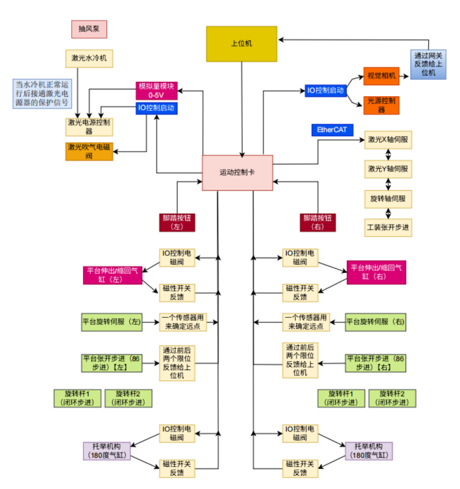
📜 授权协议
本仓库代码与文档采用 自定义商业禁止闭源协议 授权。
- ✅ 允许：个人学习、研究、非商业用途的引用与分发
- ❌ 禁止：商业闭源使用、未经授权的修改与再分发
详情见：LICENSE
深圳市英诺维信自动化设备有限公司
🏠 INVrobot 产品文档中心